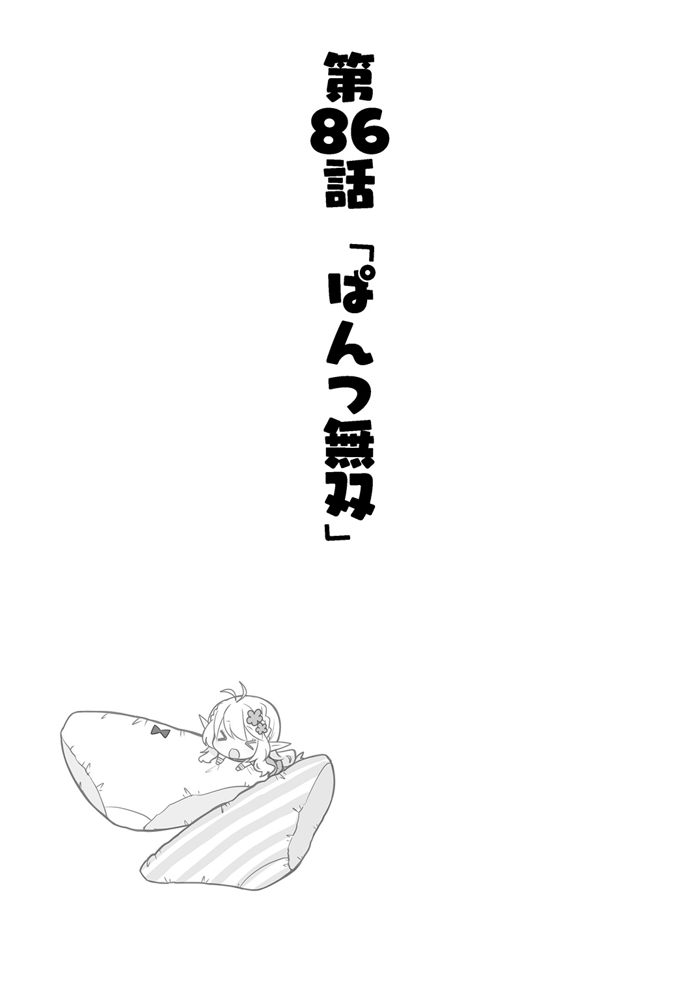

| 異世界Cマート繁盛記 5 | |
| 新木伸 | |
この本は縦書きでレイアウトされています。
また、ご覧になる機種により、表示の差が認められることがあります。
 ダッシュエックス文庫DIGITAL
ダッシュエックス文庫DIGITAL
異世界Ｃマート繁盛記５
新木 伸
びよ～ん。
伸びる。縮む。伸びる縮む。
いつものＣマート。いつもの店内。
いつものお客さんのやってこない、暇な時間帯。
俺はカウンターのテーブルの上で、輪ゴムを伸ばしたり縮めたりしていた。
これー。この〝輪ゴム〟っていうやつー。
な～んか、役に立ちそうな気がするんだけどなー。こっちの世界でも。
この輪ゴムが一杯詰まった箱は、いつもの仕入れ先で、なんの気なしに買ってきたものだった。
向こうの世界の、ホームセンターで――いつもよく行くいつもの店で――「また来たよ〝業者さん〟が」と舌打ちと共におっちゃんに睨まれたり、「あら〝業者さん〟いらっしゃーい」という女の子の店員さんから、好意的な目で迎えられたりするいつもの店だ。
ちなみに、本当にそういうふうに見られているかどうかは、あくまで俺の主観なので、実際はどうなのか、知ったこっちゃない。
前者のおっちゃんの邪魔っ気そうな視線も、質屋のジジイや、こっちのツンデレドワーフと、同種な匂いがしないこともないので――。もしかしたら歓迎されているという恐れもある。
ただし〝業者さん〟というあだ名が、つけられてしまっていることは、ちらりと耳で聞こえてきたので、これは確かだ。
まー、業者かなー？ 業者だなー。
すっかり仕入れ先にしちゃっているモンなー。カートに山積みで、コンビニ袋だのぷちぷちシートだの蚊取り線香だの、買ってゆくもんなー。
俺がよく買う品々は、なんか置かれている量が、昔の数倍にもなっている。昔はよく品切れにさせていたが、最近は品切れにするのが不可能なくらいに積みあげられている。
俺。この店の生態系、変えちゃったらしいよ？
そう考えると、俺って、ＳＵＧＥＥ？
んで、普段のルーティーンでカートを満載にしていた俺は、普段は通らない棚のところを、たまたま通りがかった際に――。
この輪ゴムの箱を見つけしまったのだった。
何百本、入っているのかわからないが、なんと、税込み、たったの一九八円！
安い安い。超安い。
輪ゴムって、これ、一本だと、いくらになるんだ？
まあ、スーパーなんぞでは、タダで配られているようなものだから、一本が一円しないどころか、一〇本でも一円しない感じであっても、べつに騒ぐほどのことじゃないのだろうが......。
でも、すげー、すげー、超すげー。
そうして、俺は「輪ゴム」をあるだけ大人買いしてきた。
レジ打ちしていた例のおっちゃんが、「ちいっ」と壮絶な舌打ちをしていた。「これもうないんですか？」と聞いたら、なにか、負けたような目をして睨み返された。
たぶん、次行ったときには、輪ゴムの在庫は数倍になっていると思う。
おっちゃんのためにも、きちんと輪ゴムの使い途と、売りかたとを、考えなくてはならない。
「しかしなー......」
俺は頰杖をつきながら、輪ゴムを指先でいじった。
「それ？ なに？」
エナが聞いてくる。
「輪ゴム」
俺は答えた。
「ふーん」
エナは、あんまり興味なさそうに、とことこと、行ってしまった。お洗濯物のカゴを抱えている。
裏行って、井戸のところで、これからお洗濯だ。
エナも、そこらのおばさん方と、おしゃべりをして〝井戸端会議〟とかゆーのを、するのかなー？ ......だめだ。想像つかんな。きっと、一人無口にずっと黙って聞いてるだけなんだろーな。
うん。きっとそうだな。
俺は輪ゴムの「売りかた」について考えた。
いかな便利グッズとはいえ、持ってきて、ただ店の片隅に置いておいただけでは、売れないのだ。
俺は過去の「無双失敗」から、そのことをすでに学習済みだった。
この異世界からの物体Ｘが、こちらの世界においても、いかに役に立つ便利アイテムなのか――。
それを〝プレゼン〟しなければならないのだ。
俺がいま頭を悩ませているのは、そこだった。
なんの役に立つっけー？ 輪ゴムってー？
俺は考えた。考えつづけた。
袋の口を縛る？ いやー、そもそも、こっちの世界に「袋」なんて、あんまりないしなー。うちの店で売ってるお菓子ぐらいなもんだしなー。袋に入っているものは。
作物とか薪とかまとめる？ いやー、紐とか藁とか、そんなものはこちらの世界にもあるしなー。だいたい、そういうの縛るなら、もっと、ぶっとくて大きなゴムが必要になるよなー。
お？ なんか箱に、八号とか書いてあるぞ？ 号数なんてあるってことは、じゃあ、もっと大きな輪ゴムもあるのかな？ しまった。見てなかった。
「お茶......、だよ？」
エナがお茶を出してきてくれた。上目遣いに、遠慮がちに、俺を見上げてくる。
いつのまにやら、午後のティータイムになっていたらしい。
俺はエナに笑いかえした。テーブルに移動する。
バカエルフも待っていた。
「これ、なーんか、使い途、ねえかなー？」
二人に見つめられながら、指先で、輪ゴムをもてあそぶ。
なんか、無双ネタを期待されちゃっているのかなー、と思って、ちら、と、二人の視線をこっそり窺ってみると、べつにそんなふうなものでもなくて――。
そんな二人の視線から――。
つい、連想してしまったのは――。
なんか、家のネコとか、家の小鳥とか、家のハムスターとか、そんなのを見守る、家人の微笑ましい視線。......みたいなものを連想してしまった。
いやー。まさかね。
「おー！ 思いついたぞー！」
一つのアイデアが降ってきた。
俺は輪ゴムの一本を、頭上に高々と持ちあげた。
たらりらったらー♪
なにを期待しているのかはわからないが、なにかを期待する目の二人に対して、「輪ゴムの無双法」を、大発表する。
「この異世界のアイテムはー！ こうして使うものなりっ！」
輪ゴムの端っぽを、人差し指の先端に引っかける。反対の端を、親指の外をぐるりと通してから、小指のところに引っかけて止める。
そして狙いをつけた。
たっぷり五秒間も狙いをつけてから――。ぴしっ、と、発射した。
「あいたっ」
輪ゴム弾は、見事に、バカエルフのおでこあたりに命中した。
はっはっはー！ 思い知ったかー！
「いたっ」
「あいたっ」
俺はたてつづけに、二発、三発と、連射した。
ぼーっと座ってるバカエルフは、格好の的だった。餌食だった。
「だめ。まれびとさん」
何発目かを装塡しようとした俺の手を、エナが、ぐっと押さえにきた。
「え？ なんで？」
「だめ。人に向けてやっちゃ」
「え？ だめなの？」
俺はエナに真顔で聞き返した。
人に向けてはやらんけど。バカエルフだから、いいかと思った。
そっか。だめなら。やめるか。
エナがそう言うんだったら、仕方がない。
おもろかったんだけどー。
――ぴしっ！
「ふおっ!?」
俺のおでこに、輪ゴム弾が命中した。
バカエルフが発射した弾丸が、俺の額を撃ち抜いていた。
「お、おい――あっちもやってきてるぞ！ おっ――おいエナ！ あっちは止めなくていいのかよ！」
「いいの」
エナはなにか、指を折って数えている。
バカエルフが、ぺしぺしと俺をイジメるたびに、指を折って数を減らしている。
じぇんじぇん止めてくんない。
悪のバカエルフが、俺をイジメるままに任せている。そして俺の手をぎゅっと押さえて、俺の反撃は封じている。
じぇんじぇん、意味がわからない。
「あ。ごめんなさい。エナちゃん」
バカエルフの攻撃の狙いが逸れた。
流れ弾が、エナのこめかみに、ぺしっと当たった。
エナは無言で、輪ゴムの一つを取ると――。
ぺしっ――。
バカエルフに撃ち返した。
「ふおおーっ！ エナちゃん！ な――なんで私を!? ――いたい。いたいいたい」
そりゃおまえがエナを攻撃するからだろ。当然の報いだろ。
そんなこともわからないから、おまえはバカエルフと言われるのだろ。
エナが止めてこなくなったので、俺は輪ゴムをごっそりと取って、びしびしと撃った。
はじめはエナと二人で連合軍でバカエルフをやっつけていたはずが、なんかそのうち、エナは向こう側についてしまって――二対一で俺は劣勢になった。
入口から「いいなー」と指をくわえて見ていたガキどもを、大量に「兵隊」に雇い入れて、俺は軍団を増強した。
徒党を組む、卑怯な女どもを駆逐しにかかる。
――とか思ったら、俺が雇わなかったガキどものうち、女の子たちのほうが、全員、ごっそりあちらについてしまって、むしろ少数派になってしまった。
俺たちは段ボールハウスを盾にして戦った。
――とかいう感じで、その日のＣマートは、大賑わいとなった。
輪ゴムはその後、売れに売れに売れまくった。
無双しすぎて、しばらくのあいだは、道だの街中だの、どこいっても地面に輪ゴムが落ちているほどだった。
なんか、輪ゴムの当初の使い方とは――。
なんか、違うような気もしないでもなかったが――。
ま。いっか。みんな笑顔だ。
いつもの昼過ぎ。いつものＣマートの店内。
俺がなんとなく、立ち働くエルフの娘の背中およびその周辺を眺めていると......。
「なんですかー？ なんですかー？ なんだか、そこはかとなく、視線を感じるんですけど？」
「いや。気のせいだろ」
俺はびしっと毅然とした態度で、そう言った。
べつに見ていない。たまたまそっちに顔が向いていただけだ。
決してお尻なんて見ていない。
「ひょっとして、マスター......。発情期だったりします？」
完全かつ完璧に潔白な俺が、こんなにも堂々たる態度で否定しているというのに、バカエルフのやつは、疑いの眼差しを俺に向けてくる。
「おまえさー。しょっちゅう、それ、言うけどさー。なんなの？ いったい？」
「なにとは？ なんでしょう？」
「だから、その、はつ......なんとか、っていうやつ！」
「はつ？」
「だーかーらー！」
俺はきょろきょろと店内を見回して――。
エナが配達に行っていて、いない、ということをもう一度確認してから、大きな声で。
「はつじょーき！ とか！ いうやつ！」
「なんでそんな大声で、目をつぶって、手までぎゅっと握りしめて――精一杯言わないとならないのか、よくわかりませんが。......どうしましたか？ 発情期が？」
「だーかーらー、それ、だっつーの！ ......なんか俺、あらぬ疑いをかけられてるんだけど。なんなの？ なぜなの？ なんか俺に恨みでもあんの？」
「発情期は、だいたい、どの人にもくるものですけど？」
「俺は来ねえよ！ 来てねえよ！」
「そうなのですか。ならよいのではないですか」
「よくないのー！」
「はぁ......。よろしくないのですか」
ぜんぜんわかっていない、という顔で、バカエルフは首を傾げる。
「だから、そーゆーこと、ゆーな、って言ってんの。おまえ。しょっちゅう。それ言ってるじゃん！」
「しょっちゅうではなくて、たまに定期的に確認しているだけですけど。念のために」
「だから。念のためとか。いらんし」
「でも男女が一緒の家に住んでいると、なったりすることもあるでしょう。発情期」
「なんだよそれ。どんな決めつけだよ」
「いえ。決めつけとかではなく。普通にみんなそうですけど」
「じゃあれか？ 一緒に住んでる夫婦とかは、その、はつじょー――なんちゃらなのかよ？ ぜってーか？ ぜってーだな？」
「その〝ふうふ〟とかいうのはよくわかりませんけど。まあ、絶対なんじゃないでしょうか。ずっとじゃないにしても、そうなるはずですけど。......じゃないと。子供。できませんよね？」
「いや。知らんし。真っ昼間から白昼堂々、あたりまえの顔をして、そんな生々しい話題振られても、困るし」
「なにを困っているんでしょう？ マスターは？」
「なぜ困っているのかわかんないおまえのほうが、むしろ、怖いんだけど......」
どうにも話しづらい微妙な話題を、平然とした顔で話されて、俺はしどろもどろになっていた。
いや、まあ......。べつにそんな、その手の話題がＮＧってわけでもないのだが......。
しかしオープンとかいうのを通り越して、なにか、異次元の文化間ギャップを感じる。
燻製肉っていうのは肉を燻して作るんですよー、とか。食べものやなにかの話題と同列に、「子供の出来かた」とか話されてもなー。
「エルフってのは、そうなのか？ なんかそんなような感じなのか？」
「人の里でも、エルフの里でも、どこでも同じだと思いますけど？ 男女が一緒に暮らすようになると、発情期がきて、そしたら、ぽこんって、子供ができます」
「いや待て。なんか順番をすっ飛ばしていないか？ まず夫婦になるのが先だろう。それから一緒に暮らしはじめるわけだろ。それが普通の順番だろ」
「ええと？ ......では、わたしとマスターは、その〝ふうふ〟とかいうものなのですか？」
「ちげえよバーカ」
んなわけあるかよ。ぺーっ、ぺっぺっ！
「じゃあ、やっぱり、一緒に住むのが先じゃないですか。......あと、そもそも〝ふうふ〟って、それ、なんでしょう？」
「へ？ おまえ、夫婦っつーたら、夫婦だろ」
「ですから。なんですか？」
「いや。だから。結婚して......、なるじゃん？ 夫婦？」
「ですから。その〝ケッコン〟というのは、なんですか？」
「うえっ？」
妙なことを訊ねられた。なんかあたりまえすぎることを訊ねられた。
しかし、あらためて聞かれると、じつは説明が難しいということに気がついた。
「えーと......、式をやってな。結婚式な。そしたら夫婦になるんだよ。あとオマケで書類出したりするけども」
説明しているうちに、どんどん、わけがわからなくなってくる。
そもそも、なんだっけ？ 結婚って？ そういえば、したことがない。
つまり、よく知らない。
結婚してると、一緒に住んでるよなー、となって、それじゃバカエルフの言ってる話と、かわらない。
「その〝ケッコン〟とか、ふうふ、とかいうのは、つまり、発情している二人のことですか？」
「なんでそうなる！ ......って、ま、まあ、あながち、間違ってもいないと思うけど......。結婚すると、一緒に暮らすわけだ。一緒に暮らしていると、まあ......、ゴニョゴニョ、とあって、まあ、子供が生まれることも、そりゃあるだろうな」
「ほら。同じじゃないですか」
「おなじかなー。そうかなー。なんか違う気がするんだけどなー」
俺は腕組みをして、首を捻りつづけていた。
――と。
「ただいまです」
「お！ おう！ エナ！ 帰ってきたのかっ!?」
「さっきからいたよ？ ただいま、って言ったけど。へんじなかった。......いま気づいてもらえた」
「え？ さっきから......、って、どのあたりから？」
俺は、たらーりと、冷や汗を流しながら、いちおう、聞いてみた。
「ケッコン？ ......とかの話？」
「マスターの世界ではー、一緒に住んでると、〝ケッコン〟とかゆーのになるらしいですよー」
「あわわわわ!!」
バカなバカエルフが、さらりと話してしまう。
俺は慌てまくった。
「そうなんだ」
......が、エナの反応は、思ったよりも薄かった。
あれ？ と思うぐらい、普通の反応。
「エナちゃんもマスターと〝ケッコン〟とかゆーの、していることになりますねー」
「うん？ エルフさんもだよ？」
「そういえば、そうですねー」
バカなことを言うバカエルフに、エナが言う。
バカエルフもうなずきかえしている。
いやー......？ そいつは......？ どうなんだー？
それは重婚っていって、禁止なはずなんだけど......。
どうも二人は、〝ケッコン〟ということの意味を、よくわかっていないらしくて......。
〝同居〟ぐらいのニュアンスで理解しているっぽくて......。
そりゃまあ、〝同居〟であれば、二人としているけども......。
いやー......。しかし......？
いいのかなー？ いいのかなー？ いいのかなー？

「ふんふん......」
床の上にぺたんと女の子座りしたエナが、鼻息も荒く、熱心に読み耽っているのは――。
少女マンガ。
木の床の上にマンガを広げて、自分も座りこんで、さっきから、ずーっと読んでいる。
あまりにも、もの凄い集中力で読んでいるので――。邪魔しちゃ悪いと思い、俺は物音をたてずに気を遣っていた。息遣いにも注意を払うほどである。
......まあ。きっとたぶん。
金たらいをひっくり返して、どんがらがっしゃんギニャー！ とかやったとしたって、気づきもしないに決まっているのだが。
ちなみに「ギニャー」のところは、昼寝に来ているお猫様がびっくりしてあげる鳴き声だ。スーパーＪＣのジルちゃんをこの世界に呼び込んだ、黒い毛並みもお美しいお猫様が、Ｃマートの床の一角をなぜか気に入ってしまって、よく昼寝をしている。
べつに邪魔にもならんので、放ってある。
エサもやらんが、居着くのは勝手。Ｃマートでは、人もエルフも魔物も動物も、ニセ勇者であっても、みんな平等。魔物はべつにやってこないが。ニセ勇者なら、来るなっつーても、よく来るが。
少女マンガは、試しに買ってきたものだった。
りぼんのついてるコミックス？ とか、なんか、そんなようなシリーズのなかから、適当に持ってきた。
どの本がおもろいか、なんてことは――本なんか読まない、俺みたいな人間に、わかるはずもないので――。
いっぱい山積みされてるのが、きっと、おもろい本なんだろう――と、賢く目星をつけて、買ってきたわけだが......。
べつに「少女マンガ」で無双できると思ったわけではない。こっちの世界で、向こうの文字が読める人間は、かなり少ない。
前はバカエルフとエナの二人だけだったが、最近は、少々増えていて――。
たとえばツンデレドワーフが「金属の本」を読みたいがために、字、覚えやがった。――どんな執念だ？
オバちゃんも、あちらの世界の料理レシピ本をプレゼントしたら、なんか読めるようになっていた。こんどＪＳ／ＪＣ向けファッション誌をプレゼントしようと思っている。
あとは、キングとキングス連中あたりと、キングのとこに詰めているロリ学者さんあたりも、もうとっくに読めるみたいで――。連中。賢いし。
――って、けっこういるもんである。
こんど、本、すこし持ってこようか。しかしどんな本を持ってくりゃいいのかな？
俺が考えてもわかるわけがない。やはり美津希大明神にお伺いするのが、一番だな。
ちなみに「少女マンガ」は、思いつきで持ってきたはいいが、どうしたものかと、扱いに困って――。
見た目ＪＳないしはＪＣのオバちゃんが、こーゆーの好きなんじゃないかと思って、持っていったら――。「オバちゃん、こーゆーの、わっかんないわよー。発情期、きてないしねえ」とか、意味不明の言葉とともにノーサンキューされてしまった。
俺はすっかり興味をなくして、ぽいっと、テーブルの上にうっちゃっておいたら、気づけばなんとエナが食いついていた。
しかもこの超反応。
金たらいがひっくり返ったって、気づきもしないような、この集中――。
――どんがらがっしゃん！ ギニャー！
「あー、ごめんなさいですー」
バカエルフのやつが、本当に、やりやがった。金たらいひっくり返して、轟音を立てていた。バカだこいつ。
そしてお猫様も「ギニャー！ キシャー！」と興奮されている。あーほらやっぱ、「ギニャー」って付くじゃん。なるじゃん。
......エナを見る。
まったく気づいていない。......金たらいひっくり返しても気づかないくらいじゃなかった。本当に気がつかなかった。
「......おわっちゃった」
しばらくして――。
エナが、ぽつんと、そう言った。
床の上にぺたんと、アヒルさん座りをしたまま、ぼんやりした目で、俺のことを見上げてくる。
――その様子が。うん、かーいー、かーいー。
「......ねえ。つづき」
「うん？ ......ああ、それ、一巻だけしかないんだ」
俺は言った。
「......二巻。ないの？」
「あるけど。ここにはないなぁ」
俺は言った。
だって一巻だけしか買ってきてないもん。
「あっ......、ごめんなさい」
えっ？ えっえっ？ ......なぜ謝る？
ここにきた最初の頃は――、エナは、謝ってばかりだった。
それが最近はなくなったと思っていたら......。
なんか......？ いま？ 謝られた......。
「あのべつに......、催促したわけじゃなくって......。これ。すっごく、おもしろかったから......、だから......、その......ごめんなさい」
エナはまた謝ってきた。
「え。あ。はい」
俺は一秒でバックパックを出してきた。二秒で肩に担ぐ。三秒で「仕入れ」の準備を完了した。
「仕入れー......、いってくるわー」
「はい。いってらっしゃ～い」
五秒目あたりには、バカエルフに見送られて、店を出た。
しっかし、エナは、いつまで経ってもエナだなー。
催促くらい、してくれたって、いいのになー。
そしたらマッハで買ってくるのにー。
来た！ 見た！ 探した！
俺は例の少女マンガをゲットした本屋を訪れていた。
つづきを手に入れるために――！
よし！ 探すぞ！
――と、なったところで、俺は、大変なことに気がついてしまった！
「本のタイトル!! 見てきてなかったーっ!!」
なにを探せばいいのか、わからない!!
すうっと、頭から血の気が引いてゆく。
全身の血液がぷつぷつと粟立って、肌の下でざわざわと騒ぐ、そんな感覚――。
なにか、とんでもないことを、しでかしてしまったときに、襲ってくる――おなじみの〝アレ〟が――。襲ってきた。
落ち着け。落ち着け。俺。
だいじょうぶ。だいじょうぶだ。俺。
まだリカバリーできる。
やらかしてしまったが、まだ、致命的ではない......。
落ち着いて、思いだせばいいんだ。きっとできる。きっと思いだせる。
イエス、アイ、キャン。
えーと、えーと......なんだっけ？ たしか......？
りぼん？ なんかそんなようなシリーズでっ......。
「なにかお探しですかー？」
書店員さんが近づいてきた。エプロンの端っこが、俺のうつむいた視界に見えている。
――助かった！
俺は、書店員さんに聞いてみた。
「――二巻!! 二巻ください!! 一〇冊ぐらい!!」
「お客様ー、落ち着いてくださいー。二巻を一〇冊は多すぎますよー。観賞用、保存用、布教用、としても、三冊あれば充分ですよー。わかってくださいよー」
「ああっ！ そうじゃなくて！ つまり二巻から先を！ とりま！ 一〇冊ぐらいでっ！」
「なんの本か、わかりませんとー。探せないですよぅ」
もっともだった。
――だが俺は、〝超集中〟の結果！ シリーズ名を思いだしていたのだった！
「りぼん!! りぼんなんとかっていう少女マンガのシリーズでっ！」
「りぼんマスコットコミックスでしたらー、それー、シリーズ名じゃないですよー？ レーベル名ってやつですからー」
「うぐぅ！」
俺は臓腑をえぐられた。瀕死のダメージを負いながらも――。
――俺は！
もっと具体的かつ決定的なヒントとなる、記憶の断片を思いだしていた！
「そうだっ！ ゴリラ！ 男前すぎてゴリラみたいな顔の男が表紙になってる少女マンガでっ！」
「ああ。はい。『俺物語!!』ですねー。それでしたら、こちらですけどー。......でも、これ、りぼんじゃなくて、マーガレットコミックスですけど？ 掲載誌は別マですから。ちがうんじゃないですか？」
「うえっ？」
俺は混乱した。よく考えた。
そうだ！ 男前な表紙のやつは、一緒に買っていった何冊かのうちに入っていただけだった！ エナが、ふんふんいって、夢中で読んでいたのは、ちがうやつだった！
なんだっけ!? エナの読んでいたのは、いったいなんだっけ！ それはなんだったか!?
思いだせ！ 思いだせ！ 俺！
おまえの灰色の脳細胞を全力で回転させるのは！ いつだ！ いまだろ！
表紙は――!? 表紙は――たしか!?
「身長差カップルだった！ ああ、いや......？ 年齢差カップルかも？ なんかそんなようなのでー」
俺は自信あるのか、自信ないのか、わからない口調で書店員さんにそう言った。でも書店員のお姉さんは、いま他のお客さんになにか聞かれて、明後日の方角を見ちゃっている。
「三人婚で、男一人と女二人で、仲良く結婚生活を送っているマンガってどこですかっ!?」
あるわけねーだろ。そんなマンガ。
俺の書店員さんを勝手に使うな。
てゆうか。もっと具体的に言えよ。俺の書店員さんに迷惑かけるな。
「あー、はい、『乙嫁語り』でしたらー、あそこでーす」
あるんだ！
一人の客の用件が片付くと、また別の客が俺の書店員さんに突撃してくる。
「飯テロな感じのものって、ないっスかねー？」
「マンガなら『ダンジョン飯』とかお薦めですよー。ラノベなら『異世界食堂』『とんスキ』とかですねー。『異世界居酒屋「のぶ」』とか、こちらの『ＧＥφグッドイーター』なんかも、お薦めでぇす」
二人の客を、数秒ずつで片付けて、書店員さんは、ようやくこちらを向いてくれた。
「りぼんマスコットコミックスで、身長差カップルっていうとー、これですかねー」
と、抜き出してきた一冊が、なんと――！
ビンゴーっ！
見覚えのある表紙だった。そうそう！ これこれ！ たしかにこれで間違いない！
「これ二巻一〇冊くださいっ！」
「それさっきもやりましたよぅ。......はい。じゃあ、ちょうど一一巻まで出ていますから、一〇冊ぴったりですねー」
棚から抜き出した一〇冊を、どさっと、渡される。
その重みを腕に抱いて、それは紛れもなく現実で――。俺は、ようやく人心地ついた。
あー、よかったー......。
これでエナのがっかりする顔を見なくてもすむ。
笑顔――は、見れないかもしれないけど、そのかわりに、夢中になって読むその横顔を、たっぷり見ることができる。
......と、俺はそこで、なんかちょっとした違和感に気がついた。
さっきからずっと、無意識の下、識閾下のあたりで、なんか、ざわざわしている。
なんか気づいているんだけど。はっきりわからない。......そんな感覚。
右見て、左見る。普通の本屋の店内だ。駅前ショッピングモールの大きい本屋だ。
それから俺は、前を見る。
「......あっ」
俺は、気がついた。気づいてしまった。
俺の目の前に立っている――。青いエプロンをその身に巻いている、ＪＫ年齢の、年若い書店員さんは――。
「......美津希ちゃん？」
「あー、ようやく気がついてくれましたかー？ マレビトさん」
「......えっ？ えっ？ えっ？」
「いつ気づくかなー、とか、思ってー、ちょっとワクワク、見てましたー」
「えっ？ えっえっ？」
「ずいぶん一生懸命でしたねー。なんかちょっとカワイーですねー。イジメたくなっちゃいましたけどー。いまお仕事中なのでー、ガマンですー」
いや。イジメるのはカンベンなっ。
「......なんで？」
ようやく、俺の口からまともな言葉がでる。
なんで美津希ちゃんが、本屋にいるの？ スーパー書店員さんを、やってるの？
「バイトですよぅ」
「バイト？」
「はい。アルバイトなんです。......正確には、むらさきちゃんのピンチヒッターだったはずなんですけどー」
「むらさきちゃん？」
「あれ？ まえにＬＩＮＥでお話ししたこと、なかったですかー？ 無双ネタってなにがある？ ――ってときに、〝胡椒〟って教えてくれてー」
「ああ。あの娘か。あのときはありがとう。助かった。――って、言っといて」
「はい」
てゆうか。俺は話してないけどな。美津希ちゃんがＳＮＳで話してるのを、覗きこんでただけだがな。
「――で、むらさきちゃんのピンチヒッター的な、ナニカ？ ――って感じで、たまに交代していたんですけどー。でもなんか、最近、いつのまにやら、普通にシフトに入っていましてー。それで、週二回」
「ほう」
まー、現実世界は、どこも大変なんだろうなー。どこもブラックでー。真っ黒でー。どこもワンオペだろうしなー。書店員さん業界も、御多分にもれず大変なはずだ。
「だけどアルバイトなら、爺さんの質屋、手伝えば――」
「うちでアルバイトしてお小遣いを貰っても、もともと、家計が一緒じゃないですかー。家庭内でお金が名目的に数字の移動をするだけでぇー、外貨、入ってこないじゃないですかー」
うお。忘れていた。
そういえば美津希ちゃんは、俺の店の経理を任せているスーパー女子高生なのだった。
てか？ 〝外貨〟とか、いまゆった？ それなに用語？ 経済用語？ どこの業界の用語？
ちなみに俺とこうして話しこんでいるあいだにも、美津希ちゃんは、たまに一秒、二秒ずつ、会話を中断していた。
通りがかるお客さんに「あっ。○○の新刊入りましたよー」とか。顔馴染みっぽい相手に、声をかけていたりする。さらには、たぶん初見の、たぶん馴染みでもなんでもないお客さんを相手に、「○○をお探しでしたら、あちらですー」と声をかけて、相手を「びくぅ！」とさせている。だけどお客さんの表情からすると、探していた本は、その○○で正解だった様子で......。
どんな超能力者だよ。
スーパー書店員・超能力者・美津希大明神のご神託にもとづいて、俺は、目当ての本の続刊一〇冊と、それ以外の「年の差カップル系」のお薦め本とを、ごっそり、全巻全シリーズお買い上げして、お持ち帰りすることになった。
仕入れ用バックパックは、本日は、エナ専用だった。
エナは大変、喜んで――。
具体的には、何日か、口きーてもらえなかった。
エナが口をきーてくれなくても、俺は、まったく不満じゃなかった。マンガに夢中になってるエナを見ているだけで、俺には、まったく充分だった。
まー、ちょっとは寂しい。まったく寂しくないと言えば、ウソになるかも？
バカエルフのやつが「私が話をしてあげますからー」とか擦り寄ってきて、マジでバカだなこいつ、と思って、しっしっ、と、やった程度だ。
今回のＣマートは、少女マンガ無双だった。
あ、いや......。スーパー書店員ＪＫ無双だった。

快晴で。昼すぎで。店の前だった。
俺は、柔らかい日差しを投げおろしてくるお日様を見上げながら、手を止めて、ぼけー、っとしていた。
いつのまにか店の前に増殖してきた「お花」に、ジョウロで水を与えている最中だった。
エナがせっせと植木鉢をこしらえて、そこらから「お花」を取ってきて、植木鉢に植えて――とやるものだから、つぎつぎ増えてゆく。
なんの花なのか。花の名前を聞いたことがある。エナは「お花だよ？」と、きゅるんと首を傾げてきた。
この世界にはひょっとして「花」に名前を付けたりしないのか――。それともただ単にエナが知らないだけなのか――。
どっちなのか、わからないのだけども。
天気がよいので、今日は洗濯日和。
道を横断してかけ渡されたロープには、洗濯された服がかけられている。
晴れた日に洗濯物がずらりと並ぶ、この光景は、向こうの世界と似たようなもの。
洗濯乾燥機なんて便利なものはないので、むしろ、外干しの洗濯物は多く感じられる。
お？ 洗濯ばさみとか、持ってきて売ったら、無双できるんじゃね？
新たな無双ネタを構想している俺は、ふと、目の前の光景に、些細な違和感を覚えた。
あれ？ あれー？ あれーっ？
なんか......、足りなくね？
洗濯物が干されている。シャツやズボン。女の人のスカートだとか、ブラウス的なもの。ベッドのシーツ。タオルだか手ぬぐいだか、そんなようなもの。
......しかし、なんか一つ、足りなくねえかな？
俺は首を傾げながら、店内に戻った。
「どうしたんですかー？ マスター？」
「うーん......」
「なんですかー？」
「うーん......」
そこに立ち、バカワンコの顔をこちらに向けてくる――おバカなエルフの服装を、上から下まで、じっと見る。
こいつの格好は、上はシャツだかチュニックだか。下はズボン。女だけどズボンで、向こうの世界だと普通だけど、こっちの世界だとわりと珍しい側で――ああそうか。旅の格好とかいってたっけな。だからズボンか。
あと......、いま気づいたのだが、上も下も、緑色でコーディネートして揃えている。こいつ。わりとオサレ系？
「どうしたんですかー？ わたしのことー？ じっと見てきたりしてー？」
見られていることを意識してか、すらっと立って、じっとしている。
俺はさっきから気になっていることを、聞いてみることにした。
洗濯物のなかに、あるべきはずのものが――それだけ見あたらなかったのだ。
エルフの娘を、上から下まで、じーっと眺めていたら、それがなにか、思いあたったのだ。
「おまえさ。ぱんつとか。どーしてんの？」
「はい？」
「だから、ぱんつ。......ああ。なんかおまえがよく言ってくる〝はつじょーき〟がどうとかゆーのとは、ぜんぜん関係ないからな。勘違いすんなよ」
俺は予防線を張っておいた。こいつ。すぐ、ゆーんだよなー。〝マスターはひょっとして発情期ですか？〟とか。
そんなわけあるかい。ばーか。ばーか。ばーか。
女がそんなこと言うんじゃありません。ばーか。ばーか。ばーか。
「はい？ ですから、ぱんつ？ ......とは、なんですか？ それは発情期と関係しているものなのですか？」
「いや。だからおまえな。ぱんつっていったら、ぱんつだよ。あのぱんつ。なんで、わかんねーの？」
「......はて？」
エルフの娘は、小首を傾げる。
金髪が、さらっと揺れる。
それにちょっと見とれちゃっていたことが恥ずかしく、俺は、そっぽを向いて大きな声で言った。
「おまえ。ぱんつ、はいてねーの？ おまえだって、はいてるだろ。ぱんつくらい」
「......はて？」
また小首を傾げる。
「はて？ ――じゃねえだろ。ズボンの下に下着くらいはいてんだろ。なに？ おまえもしかしてはかない系？」
「下着は、はいてますけど。ぱんつ？ ――とかゆーのは、はいてないですねえ」
「それがぱんつだろ」
「なるほどー。それがぱんつなのであれば、そうなのかもしれません。――でも〝ぱんつ〟って呼んでないですねー。こちらでは」
頭が痛くなってきた。なぜ白昼堂々と〝ぱんつ〟の話で漫才やらなきゃいかんのか。
「ぱんつって呼ばなきゃ、なんて呼んでるんだ？」
「ふんどし――って、そう呼んでますけど？」
「ふんどし!?」
「......？ なんで、そこ、〝!?〟が、つきます？」
「いや。だって。おまえ。〝ふんどし〟――っつーたら、あの、〝ふんどし〟？」
「言語が大地魔法でちゃんと翻訳されていれば、マスターの思う〝ふんどし〟であってるんじゃないでしょうか？ 〝ぱんつ〟ってそっちのほう、翻訳されずに、原語のままで聞こえてきてますからー。やっぱり、こちらには存在しないものなんじゃないですか？」
「......そうなんか？」
なんということだ......。
異世界......。ぱんつ......。なかった！
「じゃ、じゃあおまえ......。ぱんつ......、はいてないの？」
「ですから。〝ふんどし〟......はいてますけど？」
はいてるんだ。
「......見ます？」
とか言って、ズボンの腰に手をあてるものだから――。
「うわ！ ばかばか！ おまえばか！ このバカエルフっ！」
俺は、わたわた！ あたふた！ ――と、両手両足を振り回して、止めにかからねばならなかった。
そういえば、こいつ、人前で平然と脱いで、たらいに水張って行水するやつだったっけ。こっちの世界の人間は、そのへんおおらかで、ぜんぜん、気にしないんだっけ。
俺が、はーはー、ふーふー、と、深呼吸をして気を落ち着かせていると、エナが、ちょんちょんと遠慮がちに、俺の服の裾を引っぱってきた。
「さっきから......、なんの話？」
「ああ。いや......。なんでもないぞ。ケンカとかしてないぞ。へーきだぞ」
「ふんどし？ ぱんつ？ ......なんの話？ わかんないよ？」
「うーん......」
俺は悩んだ。
「ぱんつ、って、なに？」
「うーん......」
なんと説明すればよいのやら。
「のみもの？」
「いやー。飲まないなー」
「たべるもの？」
「いやー。食べないんじゃないかなー？」
「かぶるもの？」
「いやー。普通はかぶったりもしないだろうなー。ちょっと自信ないがなー」
「わかんないよ？」
小首を傾げられてしまう。黒髪がさらっと揺れる。
......と。
見とれている場合じゃなかった。
俺はそこで、気がついてしまった。
ひどく重大なことに、いま、気がついてしまった。
「えと。......エナ？ おまえも、その......、はいてんの？ ふんどし？」
「ううん？ はいてないよ？」
エナは顎を横に震わせる。
あー、よかったー。
なんか、ふんどしとか、はいてたりしたら......。
なんか、イメージが......。
え？
俺は、ぴたりと身動きを止めた。
ふんどし、はいてないのだとすると......。
いったい......、なに......、はいてんの？
「......みる？」
エナが、スカートを膝小僧の上まで持ちあげてゆくので――。
俺は、あたふた！ じたばた！ ――と、バカエルフのときの三倍ぐらいの勢いでもって、止めた、止めた、止めまくった。
なんか、いろいろなことでダメージ食らって、俺は、床の上に両手両足をついて、ひぃひぃはぁはぁと、空気を吸うのに忙しかった。
深呼吸しているうちに、力が戻ってきて――。
「よし！ わかった！ じゃあ俺がどうにかしようじゃないか！」
「どしたんです？ 急に？」
「次の無双ネタが決まった！」
「はあ」
「ぱんつ無双だっ！」
俺は仕入れ用のバックパックを肩に担ぐと、店を飛び出していった。
◇
「ミツキー！ 美津希大明神様あぁぁぁ！」
「はい？ だいみょうじん......？ ってなんですか？」
質屋に飛びこんでゆくと、ジャージ姿で夕飯を作っていた美津希ちゃんが、出迎えてくれた。
この時間、美津希ちゃんの居場所はわかっている。夕飯を作っている。
ちなみにもう三〇分ほど早ければ、スーパーで買い物中のＪＫを捕捉することもできる。
「じつは。折り入って相談がある。......ぱんつが欲しい」
「はい？」
「だから。ぱんつが欲しい」
「はい？ あのそのえっと？ ......それは、変な意味ではなくて？」
「たくさんほしい。何十枚も欲しい。これがいっぱいになるぐらい」
――と、俺は、バックパックを、ばしばしと叩いてみせた。
「そんなに持ってないですよぅ。せいぜいタンス一段くらいで――あいたっ」
美津希ちゃんのおでこに、軽くチョップを入れる。
「そういうんじゃなくて。新品のぱんつを何十枚も何百枚も、向こうに持っていって売ろうと思ってんの。ぱんつ無双なの」
「ああ。はい。了解しました。――ああ、ちょっと、びっくりしちゃってましたー」
ようやく正気に返って、スーパー女子高生は、考える。
美津希ちゃん。考える係。
俺。頼みこむ係。
「うーん。しまむらもいいかもですけどー。でもこの時間だと、もう閉まっちゃいますねー。今日すぐ、いますぐ必要なら、商店街の人に無理いって、店開けてもらって、何十枚かは手に入るかもですけど......。でもあんまりカワイイのはないかなぁ......」
「おい美津希や。夕飯は、まだかい？」
ジジイが、ひょいと顔を出してきた。
「あ、お爺ちゃん。もうちょっと待っててね。いま、マレビトさんが――」
「ジジイ。ハウス」
俺は言った。
すぐ終わる。待ってろ。競馬新聞に赤線引いてろ。
「孫が夕飯を食わせてくれない......」
ジジイはハウスしていった。
「うーん。うーん。うーん......っと」
スーパー女子高生は、考えている。
美津希ちゃん。考える係。
俺。両手を合わせて、拝み倒す係。
スーパー女子高生は、ちゃぶ台の脇から、ノートパソコンを持ち出した。
なんかＥＸＣＥＬの複雑なシートで帳簿の計算をやってた画面を小さくして、ブラウザを立ち上げる。
「通販だと。ニッセンとかがいいんじゃないでしょうか？」
「にっせん？」
「衣料品とか、たくさん扱っているところですよー。......あっ、ほら、ぱんつ、ありましたーありましたー。ぱんつ♪ ぱんつ♪」
女子高生が、ぱんつぱんつと連呼しているのが、ちょっと気になって仕方がないが、俺はそれよりも画面に集中した。
おお。三〇枚セット。五九九〇円＋税。
「〝色や柄の指定はできません〟――ってありますけど。べつにいいんですよね。これ？」
しかも、おお――！
「レジェンドぱんつ！ あるじゃん！」
「はい......？ れじぇんど？ ですか？」
青白ボーダー柄のぱんつ！ 俺が好きだから！ はけ！ と、昔々に要求してみたら――。
そんなレジェンドぱんつどこにも売ってないさねー。
――とか、言ってきやがったんだっけ。翔子のやつ。
まあそれはいま本当にどうでもいいのだが。
「何セット注文しますかー？」
「ぜんぶで」
「二〇セットまでしかお買い物カートに入らないですねー」
「美津希ちゃん。三〇かける二〇は？」
「六〇〇です」
「充分だ」
「サイズ。ＳＭＬってあるみたいですけど」
「じゃ。Ｓを六〇〇。Ｍを六〇〇で」
異世界の人たちは、なんか、あまり太っている人がいない。
Ｓが子供用で。Ｍが普通の大人用で。
うん。いいんじゃなかろうか。
「大人買いですねー♪ ポチっとな♪」
美津希ちゃんがポチった。注文完了だった。
とりあえず代金として一万円札を何十枚か数えて渡す。「おこづかい」と称して余分に渡そうとすると、美津希ちゃんは怒るので、きっちり代金分だけを渡す。
「なんか盛大に買うのー。楽しいですねー」
「いつ届くかな？」
「二日から四日くらいで着きますよー」
「毎日くるよ」
なるべく早く受け取りたい。無双したい。
「じゃあ、毎日、逢えますねー」
「ん？」
「今夜は、ごはん食べていってくれますかー？ すぐできますんでー」
「ん？」
なんか家庭的な美津希ちゃんに押し切られて、俺は夕飯をごちそうになった。
女子高生と差し向かいはともかく、ジジイとも差し向かいになるので、実質、プラマイゼロだった。
◇
「んしょ」
「どうだー。エナー。はきごこちは？」
「......なんか。......へんなかんじ」
エナは、ぼんやりとした顔でそう言った。
ぱんつ渡したら、そのまま、黒いワンピースの下を通して、はいちゃった......ので、俺は平静を保つので、いま、わりと必死だ。
「ぼすたおる、もそうですけど。マスターの世界の布は、柔らかくて、手触りよくて、いいですねー。これ反物とか持ってきたら、売れるんじゃないですかー？」
「反物？ どこで売ってるのか、俺、知らんし。――おまえのほうは、どうなんだよ？」
「いい感じですよー。はき心地、いいです。気に入りましたー」
腰のまわりを手で叩いて、エルフの娘は言う。
「そ、そうか」
俺はまたもや平静を保つので必死だった。
「じゃ。打ち合わせ通り。おまえら、宣伝してこーい。俺は準備しとくからなー」
「はーい」
「......うん」
「じゃ。ぱんつ売って無双作戦！ 開始するぞーっ！」
「オーッ！」
「お......、おーっ......」
◇
ぱんつが宙を飛んでいた。文字通りの意味で――。
ワゴンに置いたぱんつに、おば様方が、何十人も群がって、いま奪い合いの真っ最中。
ぱんつは常に何枚かが、空中に舞っている。
文字通りの意味で、ぱんつが飛んでいる。
「綿一〇〇％ぱんつ」は、なんかここ最近でも最大のヒット商品となった。
無双......っていうよりも、怖いくらいの勢いで売れている。
ぱんつ。大量に追加発注した。
そしたら通販サイトから消えてしまった。どうやら俺が狩り尽くしてしまったらしい。
なので翔子の筋を頼って、いまは別ルートから安定供給している。「うちは酒屋なんだけど。ぱんつ屋じゃないんだけど」とかボヤいているが、なんだかんだ言って翔子は協力してくれる。いい女だ。
それでも追加分が届くたびに、この騒ぎ。
しばらくは収まりそうにない。
いつもニコニコ。客も店主もみんな笑顔でＷＩＮ―ＷＩＮが、Ｃマートのモットーである。なので俺としては、殺気だった感じじゃなくて、ニコニコ笑顔になってもらいたいのだが......。
落ち着くまで、もうしばらくはかかりそうだ。
本日のＣマートは、「ぱんつ無双」だった。
やっべー。ぱんつ。やっべー。

いつもの午後。いつものＣマートの店内。
俺は店の入口あたりに立って、うろうろしていた。
「なー。そろそろかなー？」
「そろそろ、かもしれませんねー」
バカエルフ。くっそ使えねえ。
「なー。そろそろだと思う？」
「そろそろ......、だと思うよ？」
エナ。こくんと首を折るようにうなずいてくれる。
うん。かーいー。かーいー。
「なーなー。ほんとにもうすぐかなー？ 今日、くるかなー？ ぜったいぜったい？ そう思う？」
もっとエナに安心させてもらおうと、そう聞いてみたら――エナはバカエルフのお尻に、ささっと隠れにいってしまった。
賢くてエラいエナのかわりに、くっそ使えねえバカエルフが――俺に答える。
「昨日から明日にかけての確率は八〇％だと思われます」
「なんだよそれ。天気予報なんて聞いてねーよ」
「商人さん。いっつも定期便で行き来してますから。すっごく規則正しいじゃないですか。ええと。ひの。ふの。みの......」
......と、指折り数えていったバカエルフは、数え終えると。
「だいたい、二三日ぐらいでこのへんの街を順繰りに一周してますから、今日、明日、明後日の、どこかあたりには、戻ってくるはずですよ」
「今日くるかなー。どうかなー」
「聞いてないですねー。だいたい。マスター。なんでそんなに商人さんを待ち受けているのですか。なにか欲しいものでもあるのですか」
「いやべつに」
商人さんが扱う交易品は、多岐多様に渡っている。だがＣマートはどちらかというと商人さんの仕入れ先となっているほうで、欲しいもののほうは、とくにない。
「じゃあそれなら――」
「言っておくが。――〝はつじょうき〟とやらとは、まったく関係ないからな」
俺は先に釘を刺した。最近こいつはなんでもそれと関係づけるのだ。
「は？ ......それは関係あるのですか？」
「いや。関係ないけど」
「マスターの世界では、関係あるのですか？」
「いや。だからないけど」
「どんなふうに関係するんです？ 男性と男性で？」
「しつこいな。忘れろ」
「忘れました」
俺とバカエルフのやつが、いつもの掛け合いをやっていると――。
安産型のお尻の向こうに隠れていたエナが、くすくすと、笑顔をこぼした。
なんかさっき怖がらせちゃったようで――笑顔になってくれて、よかった。
「おや。......お取り込み中ですか？ お茶を一杯いただけると、嬉しいのですけど」
声がした。俺はマッハで振り返った。
商人さんがいた。バカエルフがバカなことを言っていたので、商人さんがやってきたことに気がつかなかった。到着の瞬間を見逃してしまった。
いやまあ。べつに瞬間を見逃してしまっても問題ないが。
「やあやあ。おかえりなさい！ おかえりなさい！」
「......はっ。はい」
俺は商人さんの手を取ると、ぴょんぴょん、飛び跳ねた。
なんか女の子みたいだと自分でも思ったので、二回目でやめた。
「はい。お茶ですね。お茶ですねー。どうぞ、こちらへー」
俺は商人さんをテーブルへと誘った。
言うまでもなく、エナはもうとっくに、お茶の準備にとりかかっている。
エナはＣマートの「お茶淹れ部長」だ。
はじめは、エナがやりたがっていたので、やらせてあげていた――という感じだったのだが。継続と研鑽と研究の結果。誰もエナと同じ味でお茶を淹れられないという――途方もない高みに到達してしまった。
教わって、同じように淹れたとしても、なぜか、同じ味にならない。
高度に進化したお茶淹れ技術は魔法と区別がつかないとかいう、まさしくあれだ。
文字通り、名実ともに、エナはＣマートの「お茶淹れ部長」であった。
「お茶、です」
エナがお茶を出す。
以前は「お茶......、です」だったところが、自信を持つようになった最近では、「お茶、です」になっている。
これが「お茶です」となるのも近いことだろう。
一般人には細かな差異なのかもしれないが、エナ学の第一人者である俺には、その違いを聞き分けることなど、造作もないことなのだった。
ポイントは「......」とか「、」のカンジだな。
「マレビトさん......。へん」
お盆を持ったエナが、バカエルフのところに行く。
「こーゆーのは、愛でると、いいんですよー。エナちゃん」
「そっか」
なんか二人が、こしょこしょと話している。
「なんか言ったか？」
「いーえー。なーにもー」
「なんにも。ないよ？」
そっか。
俺はいま商人さんと話すのに忙しい。女同士の話なら、俺に聞こえないところで、こっそり、やっているよーに。
「なにか。いいことでもあったんですか？」
イケメンさんは、ハンサム・スマイルを浮かべた。
俺は昔、イケメンという人種がキライだった。ばくはつしろ、と、思っていた。
だがハンサム・イケメンという人種は――。伊達にハンサムなわけではなく、裏表なく、誰に対しても礼儀正しく、そして優しいのだった。
異世界から迷いこんできて、右も左もわからなくて、オロオロしていた男にもだ。
俺が異世界にやってきたとき、最初に親切にしてくれたのが、このハンサム・イケメンさんだった。
以来、俺はすっかりこの人のファンになってしまっていた。
ハンサム・イケメンは、ばくはつしろ、と、思っていた。
だがいまの俺には、なぜハンサム・イケメンがモテるのか。きちんとわかっていた。
そして自分が、ハンサム・イケメンになれないことも、また、わかっている。
いや。顔の話ではなくてね？
「いいことは特にないんですが。いいものを見つけましてねー」
俺は、いそいそと、包みを取り出してきた。
こっそりとしまってあったそれを、サプライズのために、いま取り出してきた。
包装紙とリボンとで、綺麗にラッピングされた包みを、ぽんとテーブルの上に置いた。
商人さんは――。
「......？」
ああ。なるほど。
こちらの世界には、ラッピングして、プレゼント――っていう習慣は、きっと、ないのだろう。
俺は包装紙をバリバリと、ひっちゃぶいた。そして品物を直に見せた。
「これはなんですか？」
「これ。すっごい。ダウンジャケット！ なんか冬のヒマラヤにも登れるとかゆーやつで！」
俺は、もこもこのダウンジャケットの素晴らしいところをアピールした。
そこらで売ってる安物じゃない。登山用品なんかを扱うところで買ってきた、特別なやつだ。超軽くて重さは二〇〇グラムそこそこ。それでいて保温性は最高。値段も最高。数万円もする。いや値段なんか関係ないのだが。
「ヒマラヤ？」
「ああ。うちの世界の山で――」
「山？」
なんか色々、世界の〝翻訳機能〟とやらが、存在しない言葉のところで誤作動起こしているようだが。
「まあとにかく。寒いところに行くときに使ってください。このあいだ、なんといいましたっけ？ どこか寒いところに仕入れに行くときに、大変だとか、話していたじゃないですか」
「ああ。〝塔〟ですね。あそこは本当に寒くて。空気も薄くなりますし」
「そう。その山」
「山？」
「そう。その塔」
また誤変換が起きてるようなので、俺は言い直した。
まあ。塔も山も似たようなもんだ。
てゆうか。山みたいに高くて空気が薄くなる塔って、どんなんだ？
「その塔に登るときにでも、使ってくださいよ」
商人さんは、ダウンジャケットを着た。
どうやって着るのかしばらくわからず、ジッパーに格闘していたが。萌え。
そしてダウンジャケットを着た瞬間――。
「暖かい!?」
「でしょ!?」
「オーバーパンツもあります。手袋も。これで寒さなんか、へいちゃらですよ。雪の中でも眠れますよ」
「いや......。すごいものですね。貴方の世界の衣類は......」
「マスター。マスター。マスター。わたしも。着たいでーす。着たいでーす。着てみたいでーす」
バカエルフがぴょんぴょん跳ねてる。バカだ。ほんとバカ。
「おまえのなんか、ねーよ。商人さん専用だよ」
服を輸入すると、すごい無双ができそうな気もするのだが、俺はそれはやらないことに決めていた。
こちらの世界の衣類で、特に誰も困っていないし。
俺の積載量には限度があるし。衣料は、とにかく、かさばるのだ。
俺は皆を笑顔にするために、この店主仕事をしているわけであり、その幸福係数は、積載量×笑顔量の掛け算によって表される。
いくら喜ばれようとも、重さか体積のどちらかが大きいものは、よくないのだ。
軽くて小さくてコンパクトで、皆がいちばん笑顔になるものが、よいものなのだ。
ただし。商人さんは除く。
特別なところに出かけてゆく商人さんは、このあいだ「凍傷になりかけて」なんて言っていた。
だから俺は冬山装備を特別に持ってきたわけだった。
「あとですね。こんなのもあるんですよ」
ビリビリに破けた包装紙のなかから、最後に出したのは、インナー。
「ヒートテック、っていうんですけど。これすっげー暖かくて」
「ほう。下着ですか」
商人さんはその場で、ぽいぽい、服を脱ぎはじめた。意外と引き締まった体が露わになってゆく。
そういや、バカエルフのやつも、人前で、ぽいぽい脱ぐけど。
イケメンでも美少女でも、このへんは同じなんだなー。
で。着装。
「おお。これも温かいですね」
「ええと。原理は......。〝水蒸気を吸収して熱に変換〟だそーです」
「ほほう。なるほど。なるほど。......いや。やはりすごいですね」
「いやあ、それほどでもー」
俺が褒められたわけではないが、俺はなんとなく嬉しくなって、頭をぽりぽりと搔いた。
本日のＣマートは、ヒートテック無双だった。
これでまた商人さんに恩返しができた。うれしかった。俺が笑顔になった。
昼である。Ｃマートである。昼食タイムである。
俺はガスコンロに鍋をかけ、ことことこと、と、本日の昼食を煮ていた。
そういや、こっち（異世界）にきてから、缶詰だの乾パンだの、煮るだけご飯だの、そういうものはよく食べていたが、〝これ〟を食ったことは......？
はじめてだったっけ？
もうすぐ三分。
紅茶用の三分の砂時計が、もうすぐ落ちきる。
じつは三分よりも若干長めに煮たほうが良いのは、その筋の〝プロ〟には周知の事実である。三分経過したからといって、すぐに火を落としてしまうのはシロウトのやることだ。三分経過した後に、ゆるやかに、そしておもむろに、重々しくも粛々と行動を起こすぐらいで、ちょうどいいのである。
「ねーねー。マスター？」
「なんだよ？ あと〝ねー〟は一回でいいよ」
「一回じゃ、〝ねー〟であって、〝ねーねー〟じゃないじゃないですか」
「だからなんなんだよ？ 俺はいま忙しいんだよ」
砂が落ちきるまでには、まだしばし、時間がある。
俺はバカな駄エルフの、バカな話に、寛大にも、つきあってやることにした。
「......で？ なんだ？」
「その、マスターが煮ているものは......、なんですか？」
「これか？ これはインスタント・ラーメン、というものだ」
「いんすたんと？ らめん？」
「インスタントの、ラーメンだ」
「それはどのような食べ物なのでありますか？」
ああ。ほら。食い意地の張ったバカなエルフが、目をキラキラさせちゃったよ。
「おまえ？ 食ったこと？ なかったっけ？」
「ないです。ないです。絶対ないです」
こんなあたりまえのもの。食ったことないのか。
「カップ麵でもよかったんだがな。時間あるし。鍋もあるし。まあインスタントのほうが......、って!? おま！ ヨダレ！ ヨダレ！ ヨダレたれてる！」
目の中には☆マーク。そして口元からは、だー、と、ヨダレ。
すっかり台無し美少女となったエルフの娘は、俺の鍋に視線をロックオン。
口元のヨダレには、指摘してやってから数秒もしてから、ようやく気がつき――。手の甲で拭った。
手の甲にべったりとヨダレがついてる。
俺。あいつの手。しばらく触んねー！ エンガチョー！
「これは生物として仕方のないことなのです」
「だからまたヨダレを垂らすな。ほ、ほらっ――。また、ダラーっと......」
「エルフも高貴ではありますが生物です。よって、美味しそうなものを見て、ヨダレを流してしまうのは、仕方のないことなのです」
どこが高貴だ。
「しっかし......、そんなスゴいもんでもないぞ？ いやまあ、うまいっていえば、うまいけど......？」
俺は本当に、きょとんとして、そう言った。
「なんか肉味がしそうです。肉味な匂いがします」
「肉なんて入ってねーっての」
高貴なエルフのヨダレが鍋の中に入らないよう、その頭を押し返すのに、俺はたいへん忙しい。
「げんざいりょう......、チキンエキス、ポークエキス......って書いてあるよ」
エナが、袋を読んで、そう言った。
そこらにうっちゃっておいたインスタント・ラーメンの空き袋を拾って、裏のところを読んでいる。
「あー。原材料には使っているのか。――おま。鼻いいな。犬だな」
「わんわん！」
「三べん鳴いてもやんねーし」
「わんわんわん！ くるん！」
三べん鳴いて、回りやがった。
高貴なエルフのプライドの高さに、俺は目眩を覚えつつ――。
「あー！ もう！ わかった！ すこしやるから！ わけてやるから！」
「わんわん！ わんわんわんわんわわん♪」
「もーうっさい！ うざい！ おとなしく〝お座り〟してろ！」
「わん」
エナが器を持ってくる。
俺は出来上がったばかりのインスタント・ラーメンを、三等分にわけた。
三等分すると、「えー？」ってなるぐらいに少なくなってしまった。
......とほほ。
「おあずけ。まだおあずけだぞ。おあずけ。おあずけ......」
バカエルフの前に、器を置いた。
そして――、言う。
「――よし！」
「ばうっ！」
すっかりアニマルトレーナーの気分で、一心不乱に食べるバカエルフを見る。
つい、笑みが洩れる。
エナは――と、いうと、箸の二本を一緒くたに摑んじゃって、ふー、ふー、と、何度も息を吹きかけながら、こちらも熱心に食べている。
「お、おいひいぃぃぃ !! れふ～っ!!」
!! れふ～っ!!」
「あー、わかったわかった」
エルフの娘の顔には、ナミダとハナミズ――。
さっきも相当エンガチョだったが。こんどは本当に触りたくない。
美少女がまったく台無しだ。
「しかし......？ そんな、うまいか？」
俺は自分の分を食べてみた。
「いやー......、フツーだよなー？」
首を傾げる。
いや。美味いのは間違いないんだけど......。とりたてて、特別でもなんでもない、ごく普通のインスタント・ラーメンの味である。
バカエルフは、バカだから、リアクションがオーバーになるのだとしても、エナも夢中に食べているわけで......。
やっぱ、なんかあるのだろーか？
「そんな、うまいか？」
「おいしいれふぅ！」
「どんなふうに、うまいんだ？」
「すっごい、〝味〟がしますっ！」
ん......？ 〝味〟がする？
前にも、皆がそんなようなことを言って、騒いでいた無双ネタが、あったよーな？
俺は腕組みをして考えこんだ。
「あー、あー、あー、これか」
俺は、そこらにうっちゃっておかれている空き袋を引き寄せた。
裏の「原材料欄」を見る。
ほら。......あった。
「調味料（アミノ酸等）......。これかー！」
「おかわりくださーい！」
「ぶぅわ～か、床でも舐めてろ」
器を差し出すバカエルフに、俺はそう言って――。
「おかわり......ない？ あ......、だいじょぶだから......」
「すぐ作るからなっ！」
器を差しだしかけて、すぐに戻していってしまうエナに、俺はそう言った。
本日のＣマートの昼食は、インスタント・ラーメン無双だった。
缶詰以外の食品は、かさばるので、店では扱わないが......。
なんかこれから店員限定で、週に一回くらい、インスタント・ラーメン無双の日がやってきそうな予感がする......。
「無双ネタ......、ですか？」
ジルちゃんが、きゅるん、と首を傾げる。
青い目が大きくなる。
ふんわりゆるふわウエーブの金髪が、たとえヘアピンでガッシガシに固めてあっても、やっぱり揺れる。
「うんそう。無双ネタ。......なんかないかな？」
いつものように定期便で、冷蔵庫ぐらいある分量の荷物を運んできた力持ちのスーパー女子中学生を、紅茶とお菓子とで捕獲して、俺はそんなことを聞いていた。
しっかし......？ そろそろ冬休みじゃないっけ？ 中学校は？
なんか......？ ジルちゃん制服なんですけどー？
大掃除したり、通知表もらったりとかは、あったっけ？
うーむ......。もう忘れかけとる......。
そんな昔でもないはずなんだがなー......？
まあ、それはそれとして――。
わからないですよ？ ――という顔をしているジルちゃんに、俺は、説明をした。
「無双ネタっていうのは、つまり、この店で扱うと大人気になりそうなアイテムのことなんだ」
俺はこれまでヒットした商品列伝を、ずらずらと並べていった。
塩に始まり、レジ袋だの、ぷちぷちシートだの、へんなモンが、じつは大ヒットしたことを伝える。
ジルちゃんは、しばらく、うーん、うーん、と考えていたが、ややあって――。
「シュシュとか？」
「しゅしゅ......？」
なんかＪＣ用語を言われた。じぇんじぇん、わからん。
「なにそれ？」
「ほら。まえ、わたし、みんなで泊まりで来させてもらったとき。髪をツインテールにしていて――」
「ツインテール？ してたっけ？」
そんなキャピった、ラノベキャラみたいな髪型、してたことあったっけ？
ジルちゃんは目が青くて髪が金髪なことを除けば、ごく普通のカッコの、ごく普通の、スペック以外は、フツーの女子中学生であるわけで――。
そんなミックミクな髪型で来たこと......、あったっけかなー？
「ほら、二つ縛りの、おさげで――」
と、ジルちゃんは、さらさらとホワイトボードに絵を描いた。
なんのことはない。ジルちゃんの言ってるそれは、単なるおさげだった。美津希ちゃんがジャージ姿のときにやってるアレだった。
「そういえば......？ そんなような髪型、してたかな？ してたよーな気が......？」
「してましたよー」
ジルちゃんは、ＢＵＵＵと、くちびるを震わせて、洋風の本式ブーイングをやった。
なんと！ 数ヶ月も前の女の子の服装を覚えていないと、失格してしまうらしい。
俺、俺俺俺っ、この無理ゲー、無理っ！
そういや翔子にもよく言われてたなー。髪型変えたの服装変えたの、それに気づかないのと――。ヘアピンの色が変わってたとか、変Ｔシャツの動物が変わってるだの、いちいち、気がつくかっつーの。
「シュシュってのは、こんなやつです。髪ゴムに飾りがついたようなやつです」
ジルちゃんは、またさらさらと、ホワイトボードに絵を描いた。
なんだ。髪ゴムじゃん。
なら、はじめっから、そう言ってくれれば――。
「髪ゴムはー、あれだなー。売ったことはないけど。たぶん。だめだなー」
と――、俺は、道行く、おばさん、お姉さんを指し示す。
「うん？ なんだ？ エナ？」
お茶のおかわりを持ってきてたエナが、なんか、俺の服の裾を、ちょいちょいと引くので――。
「うん？ エナは、欲しいって？ 髪ゴム？ ......その、シュシュとかゆーやつ？」
エナは黒髪を揺らして、こくんと首を折った。
でもその黒髪は、顎先にかかるか、かからないか、というあたりで――。
「でもまだ伸びてないから、いらんだろー？」
とか、そう言ったら――。
ばーんと、お盆でぶっ叩かれてしまった。
エナは、プンスカと、なんだか怒って行ってしまった。
......なぜに？
考えても詮無いことなので、俺は考えるのを諦めて、ジルちゃんに向き直った。
なんでかジルちゃんは、テーブルに突っ伏して、笑死寸前......。
そんなに笑うとこだった？
「ファッション関係じゃなくて、なんか、ない？」
「ええと、じゃあ、フラフープ？」
「なぜにフラフープ」
ファッションから離れると、いきなりフラフープになる、ジルちゃんの感性、不思議すぎる。
「こっちの世界。いろいろ見て回っていますけど。フラフープは見たことないですし。遊び道具も素朴だから。アリかなー、って思って」
「なるほど」
そういえば、ガキがなにで遊んでいるのかということは、見に行ったことないなー。
あれ？ ひょっとして、アキカン一個で無双できるんとちゃう？
――缶ケリとか？
もしかして缶さえなくても無双できるんとちゃう？
――ケイドロとか？
「ナワトビとか、売ってみたら、どうですか？」
「縄跳びか」
「女の子向けなら、ゴム跳びとか」
「ゴム紐かー」
軽くてかさばらなくて、仕入れ用バックパックの端っこに詰め込めそうだな。こんど仕入れてみるかな。
でも縄跳びの縄も、ゴム跳びの紐......は、こっちの世界にはないけど。
そんな、わざわざ持ってこなくても、こっちにあるもので出来ちゃえるものではなくて――。
それよりも、もうすこし、絶対こっちじゃ無理！ ――的なもので、仕入れ甲斐があって、ガキどもがものすごい笑顔になって、すっごく夢中になるような、子供用遊具とかは――。
「こっちの道路。舗装されてないから、ローラースケートとかスケボーとかエスボードとか、無理ですよねー」
エスボードって、なんじゃ？ しらんぞ？
「ああ。じゃあ！ 一輪車、どうですか？ 一輪車！」
指先を小さく合わせて、ジルちゃんは名案を思いついたかのように、顔を明るくさせた。
「一輪車かー。なるほどっ！」
俺もうなずいた。
なるほどー。ある程度小さくてー。ある程度ー。こちらの世界では無理げなアイテムでー。
なんか、無双できそうな気がする。
「よし！ じゃあ一輪車を仕入れに行くか！」
そうと決まれば、レッツのゴーだ！
俺は椅子から腰をあげた。
◇
一輪車はそれなりに大きさがあって、いつものバックパックには入らないので、キャリアに何台か重ねて、こちらの世界へ持ちこんでみた。
スーパーＪＣジルちゃんの積載量をもってすれば、一度に何十台も輸入できそうだが......。
まずは先行お試しということで――。俺が一回で運べる台数がちょうどいい。
ウケないものを大量に持ちこんで、不良在庫にするのは忍びない。
「うーむ......」
「Ｕｍｍｍｍ......」
俺とジルちゃんは、店の前で、うなり声をあげていた。
売れん。まーったく、売れん。
「これ？ なんにつかうの？」
「これはな。乗り物だ」
「どうやってのるの？ まるいわっか。......一個しかないから。倒れちゃうよ？」
エナが、とことことやってきて、一輪車を、ぺたぺた触っている。
乗り物と言われて、地面に立てようとするのだが、タイヤが一個の一輪車は、どうやっても、まっすぐに立ってくれない。
「たたないよ？ のれないよ？」
エナが俺に聞く。俺はジルちゃんに聞く。そしてジルちゃんは――。
「こうやって乗るんです」
ひょい、と跨がって、ひょいひょいと乗りこなしてしまう。
「ほー」
俺とエナは、ぱちぱちと拍手をした。
そしたら、これまでぜんぜん興味のなかったガキどもが、わらわらと寄ってきた。
一輪車の上で上手にバランスを取ったジルちゃんは、右に左に急旋回。
タイヤ一個なのに、ぎゅりぎゅりとすんごい機動をしてみせる。土煙があがるほど。
「おねーちゃん！ すごいすごいー！」
子供たちに大ウケ。拍手喝采。
ジルちゃんはさらにテンション・アゲアゲになって、その場で、ぽうんと跳ねて――。なんと、バク宙を決めてみせた。
え？ これ、すごくね？
バク宙すごいし。
助走もなしでその場でバク宙決めるのは、もっとスゴイし。
それを一輪車に乗った状態でやるとか、超、スゴくね？
まあ、冷蔵庫を担いでくるような、スーパーＪＣなのだから......。不思議はないっていうか......。そのくらいできて当然というか......。
何百キロの巨大な荷物を背負ってきて、地響き立てつつ置いてゆく光景には見慣れても、こっちの高機動バージョンのほうを見たのは、初めてなので――。
俺は、かなり、びっくりしていた。
ジルちゃんは声援を受けると、ますます調子づいていって――。
「よっ、はっ、とっ」
一輪車のサドルの上に、なんと、立ち上がった。
そして、さらに――。
「ほっ」
一輪車のサドルの上で、逆立ちまでやった。しかも片手。――それで器用にバランスを取っている。
ここまでいくと、もはや、軽業の領域だった。
サーカスで、こんなん、見たことがある。
ジルちゃん、いますぐ、サーカスで活躍できてしまえそう。
一輪車、というより、サーカス技は、こちらの世界の皆に大人気だったようで――。
しかし......。おーい。女子中学生～？ ぱんつ見えてんぞ～？
◇
一輪車は売れた。ヒット商品となった。
しばらくの間は、俺とジルちゃんでせっせと運びこんだ。
ジルちゃんが一度に五〇台ぐらい運びいれるその脇で、俺は五台くらいを、ちょろちょろと運んだ。
お代は、お求め安くリーズナブルな――銀貨二枚。
買えないガキんちょのためにＣマートではレンタルもやっている。
なんか、異世界現代世界、交換レートを考えると、ひどく赤字な気がしないでもないが......。
皆（特にガキんちょ）が笑顔になっているので、よしとしよう。
Ｃマートおよび、その周辺道路は、本日も笑顔だった。
いつもの午前。いつものＣマートの店内。
午後はだいたい暇していて、ティータイムなどをやってる店内だが、午前中はそれなりにお客さんがくる。
店の中に二～三人いるお客さんが会計をするときのために、俺がカウンターでスタンばっていると......。
なにか入口のほうで、ざわめきがあがった。
新たにやってきたお客さんは、ちょっと人とは違う感じで――。
なんか耳が長くて尖ってる？ 肌がなんだか緑色？ 頭つるつるスキンヘッドで。鼻は大きくて平たい。
あー、俺、なんか知ってる。
ファンタジーでよくあるアレだ。......なんつったっけ？
「......オークだ」
お客さんの誰かが、ぽつりと喋る。
ああ。そうそう。オークだ。
そうそれ。
俺もあともうちょっとで思いだしていたところだが。お客さんの誰かのつぶやきで、はっきり思いだしていた。
ほー。へー。はー。さすが異世界。オークいるんだ。
すごいすごい。
「いらっしゃい」
俺は入口のところで立ち尽くしているオークに、そう声をかけた。
「ここ。すごい。もの。ある。......きいた」
オークはそう言った。でっかい体にみあわない、たどたどしい喋りかたをする。
「かね。......ある」
握っている大きな拳を開く。銀貨がたくさん。金貨もちらほら。
うん。だいぶあるな。錫貨一枚握りしめて、飴ちゃんを指差すガキんちょより、ぜんぜんお金持ちだ。
うちの店はリーズナブルだから、それだけあれば、だいたい、なんでも買えるぞー。
俺はカウンターの内側から、ニコニコ笑顔を向けていたのだが――。
オークのお客さんは、なかなか、それ以上中に入ってこない。
右を見て、左を見ている。
「オークだ......」
「......オークだぞ」
店にいる他のお客さんたちは、顔を見合わせて口々にそうつぶやいている。
オークの耳は、ぴくんぴくんと動いて、そっち向いているから、たぶん聞こえている。
エナが俺の腰に、ひしっと――しがみついてきた。
ん？ 怯えてんのか。
ぎゅっとしがみついてくるエナの頭を撫で、その肩を抱いてやる。
震えが止まったっぽいので、それで正解っぽい。
お客さんの一人が、勇気を出した。
オークに向かって、口を開く。
「オークは......、かえれ」
そうだそうだ、と、他のお客さんも同調する。
口々に言われて――。
オークはしょんぼりと肩を落とした。
くるりと回れ右をして、とぼとぼと、店を出て行こうとするオークに――。
俺は――。
「おい待てよ」
声をかけて、呼び止めた。
他のお客さんたちやら、腰にしがみついているエナやらが――ぎょっとした顔になってるが、そんなの、知らねー。
バカエルフがどんな顔しているのかなんて、見てもやんねー。どうせバカ面さらしているに決まっている。
「帰んなくていいぞ。なに欲しいんだ？ うちにはなんでもあるぞ」
「おで。......かえる」
「いいや。帰らなくていい。買いたいもん買ってけ」
俺は深く息を吸うと、皆に聞こえるように、大きな声ではっきりと言った。
「ここはＣマートだ。俺が店主だ。俺がルールだ。この店のモットーは、みんなニコニコ笑顔でＷＩＮ―ＷＩＮだ。自由の店だ。オーク族だろうがキング族だろうが、なんだろうが、客として来たなら、差別もしねえし特別扱いもしねえ。みんな平等だ。オークがなんだ。だからどうした。だいたい店員には駄エルフだっているんだぞ」
「駄エルフでーす」
バカエルフがバカっぽく言った。
いつもなら安産型のケツにケリくれているところだが――。
うむ。いまはよし。すごくよし。
オークはびっくりしたような目で、店の奥にいたバカエルフを見ている。
いま気づいたような目だ。――いま気づいたんじゃないのかな？
ん？ オークとエルフって、天敵設定とかあったっけ？ 俺あんまそのへん詳しくないんだよなー。
まあ、そのへんは、あとでいっかー。
「おま。なにが欲しいんだ？」
「おでの。村。ゾンビ。でてきた。やっつける。武器。ひつよう。......おで。きいた。すごい。ぶき。ここ。ある」
話しているうちに、オークの目は、探しものを見つけたらしい。壁に飾られた「勇者セインの使いし業物」に――ロックオン。
「エクスカリバーかよ......」
金貨が一枚、二枚......。あとは銀貨と銅貨ばかり。
最近、俺は、銀貨が千円札で、金貨が万札――ぐらいの感じで換算している。
あれ。チェーンソー。日本円だと四万円するんだよなー。金貨四枚はねえと、赤字なんだよなー。
勇者セインは、ニセ勇者のくせに金回りがいいから、一プラチナとかむしってやっているけどなー。「釣りはいらない」なんてカッコつけやがるから、もうなにも遠慮なくむしり取ってカモにして、カッコつけさせて男をあげさせてやってるけどなー。
「たりない。か？ ......またくる」
オークの戦士は、いさぎよく、くるっと回って帰っていこうと――。
いさぎよすぎる。
「ああ。まてまてまて。......だいじょうぶだ。今日はオーク・サービスデーにした。いま決めた。俺が店主だ。俺がルールだ」
俺がそう言って、胸を叩いたとき――。
じゃらっと、カウンターの上に銀貨と金貨が並べられた。
店の中にいた他のお客さんだ。皆で小銭を寄せあわせてくれた。
「その、さっきは......、悪かったよ。これは......、お詫びの気持ちで。......店主さん？ これで足りるかな？」
数える必要などない。足りている。当然、足りている。
たとえ足りてなくっても、足りている。
俺が決めた。俺がルールだ。俺が店主だ。
「おまえ。おで。ともだち」
オークは口を開けて牙を剝いて、そう言った。笑っているのだと、わかった。
バナナみたいにぶっとい指で、自分の胸と、そのお客さんたちの胸を、交互に指差す。
「......おまえ。こまったとき。おでに。いう。おで。たすける。おで。いのちかける」
おー。おー。おー。なんか金貨一枚と少々で命もらえちゃったぞー。
よかったじゃーん。
他のお客さんたちは、頭を搔いて、困った顔。
俺はしらん。
Ｃマートの店主は、店外のことまでは、関知しない。
俺はあくまで事務的に、極めて事務的に、チェーンソーを持ち出してきて、オークに売った。
共通語の説明書はすでにあったが、オーク語のオーク専用を作るのに、ちょっと時間がかかった。
バカエルフのやつがオーク語を書けるということに、俺も少々驚いたが、オークのほうがもっと遥かにびっくらこいていた。
......エルフとオークって、やっぱり、なんかあるのかな？
ま。どーでもいっかー。
今日のＣマートは、特に無双ネタはなかったが......。
常連客が一人増えたんじゃないかと、そう思う。
いつもの昼すぎ。いつものＣマート。
つい眠気をもよおした俺は、店の前で、ラジオ体操の第一をやっていた。
体を動かすと眠気が飛んでくれる。
道の向かいでガキどもが俺の動きをマネしていたりするが、気にせず、第二に入ろうとすると――。
通りの奥のほう。街の外へと向かう方角から、なんか、目の覚めるような美人が歩いてきた。
ちょっと逞しい系の美人だ。
でっか～い斧を背中に背負っているのに、ぜんぜんフラつきもしないで、すたすたまっすぐに歩いている。
なんか違和感があるなー......？ と思ったら、その美人さんの肌は、緑がかった灰色で、このあいだ店に来たオークと同じ色だった。
俺はこのあいだ店に来たオークのことを思いだした。
そういや。あいつ。あれから来ないなー。エクスカリバーを買っていって、ゾンビやっつける、とか息巻いていたのだが――。ゾンビにやっつけられたりしては、いないだろうなー？
と、そんなことを考えていると。
例の美女が、すたすたすたと、俺の前にまっすぐ向かってきていた。
「お尋ねしたい。〝しいまーと〟という店は、こちらか？」
「――書いてあるだろ？」
と、俺は、親指で店の看板を示しながら、そう言った。
「共通語とオーク語以外は読めん」
美人さんはそう言った。
そういやそうだ。看板は日本語だった。こっちの世界の共通語？ ――とかゆーので、書き直すかな？ まあこのままでも味があるからいっか。
「我が弟――〝牙持てしドルク〟の恩人とは、おまえか？」
「恩人かどうかは知らんけど。エクスカリバーなら売ったがな」
「ははっ。オークを見てもまったく動じない。話通りの男だな」
なんか感心されとる。......なんで？
ゲームの中では、さんざん見てきたしなー。オーク。
このあいだやってきた男のオークは、ゲームの中のオークと、モロに印象が一緒だった。
しかし目の前にいるこのお姉さんは、だいぶ印象が違う。
そもそもゲームの中にオークの女性？ 雌？ ――が出てくることって、あっただろーか。
男だけの種族だと思っていたのだが。姫騎士の天敵だったと記憶しているのだが。
いたんだ。お姉さん。
オークの雌ないしは女性は、見上げるばかりのご立派な体格を除いたら、わりと普通の人間で――。街中で見かけても、べつに、気づきもしないんじゃないだろうか？
――とか、思ったら。
道の先から来た二人連れが、「おい......、オークだぞ」とか小声で言って、引き返していった。
「普通は......。ああだ」
美女は、ふんとばかり、鼻を鳴らした。
不敵に笑うと、口の中から牙が露出して、あーやっぱりオークだー、と思った。
「なんの用なん？ またエクスカリバーが何本かいるとか？」
「それもある。――が。まずは我が部族を助けていただいたことに礼を言わせてもらう」
片膝をついて、頭を垂れる。
「オークの人が地に膝をつくのは。マスター。最上級の礼ですよー」
バカエルフが俺の斜め後ろから、そう言ってくる。
そうなのか。
オークのお姉さんは、低い姿勢で、頭のつむじを見せたまま。
ほうっておくと、いつまでもその姿勢でいそうなので――。
「......茶でも？ 飲んでくか？」
俺はそう声をかけた。
「いや。長居をしては、店主殿に迷惑がかかろう。用事を済ませたら、すぐに立ち去ろう」
「知らん」
堅苦しいことを言ってくるので、俺は、そう答えた。
「は？」
美人さんは、目をぱちくりとやっていた。
関係ないが......。しかし。睫毛ながーっ！
「迷惑とか。しらんし。おまえの弟とやらが来たときにも、他の客に説教するはめになったんだが......」
俺は、はあっとため息をつくと、店の運営方針について、一気に語り出した。
「ここはＣマートで、俺が店主だ。よって俺がルールだ。この店のモットーは、みんなニコニコ笑顔でＷＩＮ―ＷＩＮだ。ここは誰でも買いに来ていい自由の店だ。オーク族だろうがキング族だろうが、みんな平等だ。客として来たなら、差別も特別待遇もなしだ」
「なんと。キングと同等か。我らオークが」
「俺にとっては同じ客だ」
――てか。キングとかいったって、飴ちゃん舐めてる、単なるお坊ちゃまじゃん。
「惚れた」
「は？」
「あ、いや......。人柄に惚れたという意味で。べつに他意はなくてだな......」
俺もいまちょっとびっくりした。はつじょーき？ ――とか、そっち系かと思った。
「とにかく。入れ。茶でもしばいていけ」
「ああ。うむ。しばいていこう」
◇
「我らは、遥か昔は、人に害をなす種族だったそうだ」
お茶と茶菓子。
あっちの世界産のお菓子を、夢中で食べていた美人さんは、キノコの森から、おせんべいから、バームクーヘンまで制覇していったあとで、ようやく喋りはじめた。
それまでずっと無言。夢中で食べてた。ちょっと萌え。
「はじまりの魔法使いに調伏された我らは、いまはアンデッド族どもを封じ込めた、地下世界の境界を守る防人として――」
「なーなー、〝防人〟って？ なに？」
「守る人のことですよー」
俺が小声で聞くと、バカエルフが教えてくれた。
「――私が遠征、ええと......遠出して戻ってくれば。我が弟が、半死半生で――」
「え？ あいつ死んじまったの!?」
ええっ!? ええーっ!!
「......いや。早まるな。死んでない。半死半生だが、いま療養中だ」
「あー......、なんだ。よかった」
「本来ならば弟が来るべきだが。姉である私がかわりに礼に参った」
「だから礼とか、いいっつーの。ただ商売しただけだっつーの。笑顔が見れれば、俺はそれだけでいいんだっつーの」
俺がそう言うと、オーク姉は、牙を剝いて笑った。
「いい笑顔だったそうだぞ？ ......一千のアンデッドを倒しきり、力尽きはしても、なお倒れずにいた弟は、一振りの剣を抱えこんでいたそうだ」
剣じゃなくて、それ、チェーンソーだけどな。
「それはこちらの店で買ったものだと聞かされた。かの人類の英雄――勇者セインの使う剣と同じものだと聞かされたときには、正直、耳を疑った。そんなものが、どうして、我らオークの手に――」
「俺が売った」
オークだろうがニセ勇者だろうが、客として来れば売る。それだけのことだ。
「弟は代金もろくに支払っていなかったそうだが？」
「いや。定価分は、きちんともらったぞ。......他のお客さんがカンパしてくれてたからな」
「うむ。後ほどその彼らのところにも礼をしにいくつもりだ」
「べつにいいんじゃないか？ おまえの弟が、なんか困ったことがあったら、命をかけるとか、なんかそんな約束してたみたいだし。弟の約束だ。弟に守らせろ。姉が尻ぬぐいとかするもんじゃない」
「うむ。オークは約束を違わん。友のためには命をかけよう」
「だから大袈裟だっつーの」
「店主殿も。困ったときには頼ってくれ。弟と部落の恩人だ。私の命をもって贖おう」
「まー、なんかあったらなー」
オーク姉は、えらい体格がいい。
積載量が必要なときには、頼り甲斐がありそうだ。ジルちゃんとこの姉キと、どっちが積載量があるのかなー？
◇
オーク姉は、堅苦しいことをたくさん言って――。
お茶と菓子を大量に食べ散らかして、そして俺の手を、何度も何度も名残惜しげに握り――。
そして、引き上げていった。
「毎度ありー」
俺はそう言って見送った。
「エクスカリバー」の注文が一〇本、入ってしまった。一〇本もあると、一度じゃ持ってこれないなー。あと、あのオーク姉の体格だったら、いつものサイズでなくて、もっとデカいチェーンソーでも振り回せるんじゃないのかなー？
なんか、まえにカタログで、「山林用」とかゆー、エラく値が張るが、エラく強力そうなチェーンソーを見たことがあった。
いわゆる「斬馬刀」みたいなやつ？
あのオーク姉。ずっと背負っていた巨大斧が、なんか、数百キロはありそうだったので、鉄塊にしか思えない斬馬刀とか振り回すのも、余裕な感じがする。
それも持ってくっかなー。
と、オーク姉の見えなくなった道の先を、しばし、見つめていた俺は――。
「......で、おまえ、さっきから、なにしてんの？」
脇に向けて声をかけた。
店の入口の脇で、もたれかかって、腕組みをしていたニセ勇者のやつは――。
「心配しなくても、今日はスカウトには来ていない」
こいつは、しょっちゅうやってきては、うちの店員をナンパしてゆくのだ。
「んなことやってみろ。マジで蹴って帰すからな。......で、なんの用なんだよ？」
「いや。女オークが来ていたというのでな。......念のため、だ」
なにが念のためなんだか。
あとその、指先を「すちゃっ」とかやってくる仕草。カッコいいとでも思っているのか。
「アホか。帰れ帰れ。客が来て茶をしばいて、帰っていった。――それだけだ」
俺が言うと、ニセ勇者のやつは、意外そうな顔をした。
「おまえ......、彼女が誰か知らずに話をしていたのか？」
「しらん。どうでもいい。......って、ちゃんとわかっていたぞ？ このあいだ来たオークのお姉さんだそーだ」
「いや、だから......、後方方面地下世界を統轄する、将......」
「しょう？ なに？ なんなの？」
「......いや、おまえは、そういうやつだったな」
「だから、なんなの？」
「ああ......、そうそう。換えのエクスカリバーを貰えないかな。わりと傷んできた」
「いいけど。一〇本注文入ってるから。......そのあとになるぞ？」
俺は、しぶしぶ、ニセ勇者のやつを店内に招いてやった。
まあ注文するなら、茶ぐらいは、だしてやろう。
本日もＣマートは、ニコニコ笑顔に満ちていた。
とくに語るべきことは、なにひとつ、起きてはいなかった。
「店主殿。なにか困ったことはないか」
いっぺん帰ったのに、何日かすると、オーク姉は、またひょっこりと顔をだしてきた。
「いや。特にないな」
べつに塩一〇トン運ぶ用事だとか。特にない。
積載量が必要なときには、大変、頼りになりそうだが......。それ以外のときに頼む用事は、特になさそうだ。
「そうか......。恩返しがしたいのだが」
「だから大袈裟だっつーの。しなくていいっつーの」
「なにか良い恩返しの方法はないだろうか」
「聞けっつーの」
オーク姉がいるだけで、お茶とお菓子が盛大に減ってゆく。
そんなことで文句を言うほどセコくはないつもりだが――。
でもそのお菓子、運んでくるの俺なんだよなー。けっこうかさばるんだよなー。お菓子ー。
「なにか良い恩返しの方法はないだろうか」
また言った。せんべいをばりっと一撃で嚙み砕きながら、オーク姉はそう言った。
もうすこししたら、三回目も言うんじゃなかろうか。
「おんがえし......の、ご本......」
エナが、なにか本を持って、オーク姉のところに近づいていった。
はじめオーク姉のことを怖がっていたエナだが、デカいだけで無害だと知ると、「......お茶です」とか、「......おかしです」とか。ちょっとずつ距離を詰めていって、いまでは隣に座るようになっていた。
たまに、そーっと手を伸ばして、二の腕に盛り上がった力こぶとかを、指先で押して、「わー」とか小さく言っている。
オーク姉のほうも、気づいていないフリをして、そういうときには、「めきょっ」と二の腕をバンプアップさせたりする。
「ほう。これはなにかな？ なにかな？ 恩返しの作法書かな？ しかし異世界語では、私は読めないのだが」
「......よみます」
「頼む」
言うと、オーク姉は、エナを片手でひょいと持ちあげて、膝の上に置いた。
「うわぁ」
手荷物みたいに軽々と運ばれたエナが、思わず歓声を洩らす。
すげーなー、力持ちー。
俺なんて両手で「高い高い」をやってあげるのが精一杯なのだが......。
最近、エナ、なんだか重くなってきていて、「高い高い」もけっこうしんどくなってきた。
俺の腕が弱くなったわけでも、エナが太ったわけでもないだろうから、これはきっと〝成長〟したということだろう。なんだか、だんだん、エナが子供から女の子に変わってゆく気がする。
ちなみに、最近は、なんでか、「高い高い」をしてやると、なんか不満なようで、ぽかぽかぽかと、上からぶたれる。ドワーフがやると「うわーい」と喜んで全然ＯＫなのだが、俺だけＮＧなのである。しどい。
なんでなのかは、よくわからない。
オーク姉の膝の上で、エナは本を開いた。――って、それ、絵本じゃん。
絵本ならこっちのガキも愉しめるかなー？ と、そう思って、いくらか置いておいた絵本だ。
ぜんぜん売れず、かわりにガキと小説家とがやってきて、本がぼろぼろになるまで立ち読みしてゆく。......いや。床にぺたんと座りこんで読んでるから、あれは立ち読みではなくて、座り読みか。
うちは図書館じゃないんだが。
まあ。いいが。
「ツルのおんがえし」
エナは絵本を読みはじめた。
俺は椅子の上で、ずるっと、ずっこけそうになった。
いや？ あのね？ それはね？ 恩返しといってもね？ フィクションでファンタジーでね？
あのね？ エナさん？
「むかし、むかし、あるところに......」
エナは読む。そのエナを膝の上に抱えこんで、オーク姉は聞いている。
なんか不思議な光景だ。これが逆で、読んでやっているのがオーク姉のほうなら、ごく普通の微笑ましい光景なのだが......。
ツルの恩返しは、日本の昔話だ。
おじいさんが罠に掛かったツルを放してやると、美しい娘に変身したツルがやってきて、恩返しする、という話である。
「......けっして、のぞいてはいけませんよ。むすめは、そういって、へやにこもって、はたをおりました」
「なるほど。......して、〝はた〟というのは、なんだろう？」
「きれいな......、布？」
聞かれたエナが、首を傾げぎみに答える。
「ふむふむ。なるほどなるほど。......しかし私は布など作れんぞ？」
「......なんでもいいと、思うよ？」
「ふむ。なんでもいいのか。ならば、鍛冶仕事であれば、多少は心得が......」
なんか女二人。
膝にのってるほうと、膝にのせたほうとで、相談をしている。
「よし心得た！」
オーク姉は勢いよく立ち上がった。膝にのっていたエナは、ぽーんと一メートルも飛んでから、両手を水平に伸ばして綺麗に着地した。
いったい何を心得たのやら。
なんか乗り気になってる二人をよそに、俺は一人、仏頂面をしていた。
◇
とんてんかん。とんてんかん。
裏の空き地に音が響く。
なにをしているのか。まったく気になったりはしないが、窓から、ちらっと見てみたところでは、なにやら、小屋をおったてているらしい。
大工仕事もできるのかー。へー。オーク姉すごいじゃん。
でも大工仕事が「おんがえし」ではなくて――。それはなにかを作るための作業場であるらしい。まさか機を織るわけではないだろう。いったいなにをするのやら。
ほんの半日ぐらいで小屋を完成させてしまうと、ドワーフの鍛冶師のところに行って、道具や材料を色々と貰ってきた。
裏に鍛冶屋ができてしまった。
「決して覗いてはならぬぞ」
そんなふうな、昔話の定番台詞を吐いて、小屋に引きこもったオーク姉は、とんてんかん、とんてんかんと、金槌の音を響かせ続け――。
俺たちの睡眠妨害をし続け――。
......いや。騒音で眠れなかったのは、俺一人だけだった模様。
バカエルフはバカなので当然、ぐーすか眠っていたが......。
エナまでもが、普通にすやすやと眠っていた。
騒音に眠れない神経質な人間は、俺一人のようだった。......これって、神経質なのか？
最近、川の字になって三人で寝るの、これ、どうなの？ ――と、そう思わなくもないが、すっかりＣマートの風習となっているので、なんかもう、これは仕方がない。
そして翌朝になって――。オーク姉は――。
「おじいさん。はたが織れたぞ」
「だれがおじいさんだ。あと、どうみたって、それは――」
――と、俺は、オーク姉が重そうに持つ物体を見た。
あの彼女が〝重そうに〟持っている、それは――なんか、〝鉄の塊〟としか表現できない〝ナニカ〟であった。
長さ......。三メートル？ 四メートル？
重さ......。数百キロ？ 一トン？
ファンタジーで見たことあるなー。これは、〝斬馬刀〟とかゆー――。
「斬竜刀、という」
馬じゃなかったー。竜をぶった斬るためのモノだったー。
「......ま。古の時代ならともかく。竜など。いまはこのあたりにはおらんがな。だからこれで本当に竜が斬れるのかどうか、私も、知らん」
てゆうか。もし近所にいたら、斬る気マンマンなのね。
「まあとにかく。受け取ってくれ」
――と、俺に手渡そうとしてくる。
思わず手を伸ばして受け取りかけて――。
俺は――。
「やめろ！」
素早く、後じさった。
あんなもん持たされたら――!! 死ぬわ！
そんなデカブツ、床に置いといても邪魔になるので、店の壁の上のほうに、長々とかけ渡して固定することにした。
壁がみしみしと言ってたので、材木で補強工事が必要だった。
きっともう、この物体は場所替えさえもできないだろう。そう確信した。
「では、また来る」
斬竜刀を壁に飾り付けたオーク姉は、本人的には満足したのか――。ニコニコ笑顔になって、引き上げていった。
役にも立たない鉄塊を押しつけられて、こちらはいい迷惑なのだが――。
まー。本人がニコニコ笑顔になっているので、よしとした。
ここはＣマートだ。笑顔がルールだ。
◇
しばらくするうちに、壁を飾る大剣は、噂になり――。
武器コレクターらしきヤツだとか、冒険者らしきヤツだとかが、ぜひ売ってくれ！ ――だとか。目を血走らせて、ミスリル貨とかゆー、見たこともない高額貨幣を何枚も握って、迫ってきたりした。その度に俺は断った。
そもそも持ちあげられるヤツ、いねーじゃん。
もし持ちあげられたら、タダで持っていっていいぞ。――とか言ったら、結局、お持ち帰りにできるヤツは一人も現れなかった。
うちのバイトのＪＣだったらどうだろうか......？ 持ちあがるだろうか？
てゆうか。ＪＣと比べられてる時点で、力自慢、だめだめじゃーん。
◇
「ふむ。いい剣だ」
ドワーフの鍛冶師が、壁を横断する大剣を見て、あご髭を撫でまわしている。
「おい。なんかこの剣。有名になっちまってるんだけど」
「うむ。そうだな。良い剣だ。......使い途はなさそうだがな」
「お株を奪われちまうぞ？ ――どうしようどうする？」
俺は茶化して、ドワーフにそう言った。
すると彼は――。
「オークとドワーフでは製法が違う。あれはドワーフには作れん。そしてドワーフの繊細な鍛冶もオークにできん」
ドワーフって繊細だったんだ。はじめて知った。
◇
Ｃマートに、名物オブジェが、一個、増えた。
「じんぐるべー♪ じんぐるべー♪」
いつもの昼すぎ。いつものＣマートの店内。
俺が歌いながら、棚の商品の並び替えをしていると――。
なにか、視線を感じる。
くるっ、と、振り向くと、べつになにもない。
また棚のほうに顔を戻して、作業に戻る。
「じんぐるべー♪ じんぐるべー♪」
向こうの世界に仕入れに行くと、どこでもかかって――は、いないかな。
最近はなんだかクリスマスもあまり騒がなくなってきた。でもおよそ五〇パーセントを越える店では、この手のソングを聴ける。
なので思わず、こちらの世界でも、口ずさんでしまう。
タイミングを見計らって――くりん、と、後ろを向いてやったら。
フェイントに引っかかったバカなエルフと、ばっちり目線があった。
「マスター。マスター。その楽しげな歌は――」
「へーん、おしえてやんねー」
バカエルフのやつが、そんなことを聞いてくる。俺は速攻、お断りを入れた。
「――その楽しげな曲はなんでしょうかと。エナちゃんが」
「これは、ジングルベーの歌だなっ」
俺はエナに向かって、胸を張った。ドヤ顔になった。
「じんぐる......？ べー？」
エナは、きゅるんと小首を傾げる。
そうすると、さらさら黒髪ヘアが片側に流れて――。その破壊力は凶悪なほど。なんか最近日増しに破壊力が増している気がする。
「あれ？ ジングルベー、じゃなかったかな？ なんて名前の曲だったかな？ まあ、街でよくかかっている曲だ」
「演奏してるの？」
「ん？」
「街で、誰かが演奏してるの？」
ああ。エナがなにを言っているのか、わかった。
「ちがうちがう。人が演奏しているんじゃなくて。――ほら。まえにオルゴールやったろ。あれと同じで、音楽を鳴らすキカイが、街のあちこちにあってだな」
「うわぁ」
エナは顔をほころばせた。なんか想像しているっぽい。
どうも現実よりも〝スゴイモノ〟を想像していそうだが......。
俺のいた元の世界。
いったい、どんなふうにエナには思われているんだろうか。
「その街のあちこちにあるキカイがだな。毎年、このクリスマスの時期になるとだな。だいたいこの曲を流しているわけだ」
「......くりすます、って？」
「ん？ しらんの？ クリスマス？」
俺はバカエルフに顔を向けた。
「それはなにか美味しい食べ物の響きがします」
やっぱバカだ。こいつバカだ。
「こっちには、ないのか？ ――クリスマス？」
俺はエナとバカエルフにそう聞いた。
二人とも、揃って首を左右に振る。
そっか。異世界には。ないのか。クリスマス。
「くりすます......、って、どんなの？」
「んーとな......、まずケーキだろ。それから、ローストチキンだろ。あと、シャンペン？ シャンパン？ どっちだっけ？ なんかスパークリング・ワインみたいなのが――」
クリスマスのごちそうの数々を、俺が指折り数えてゆくと――。
「それはなにか美味しいものの響きがしますー。しますー。しますー」
例によってバカエルフのやつが、だー、と、ヨダレをダダ流しにしている。
だいじなところなのか、三回も言ってる。
「肉味なのは、ひとつだけだぞ」
「きっとローストチキンというのが肉味だと思います」
「あたりだが」
「くりすます......って、おいしいもの、たべる日？」
「いやいや。それは前座だな。メインイベントは、サンタさんのほうだ」
「さんたさん？」
エナは、きゅるん。
セミロングの黒髪が、さらっ。
「さんたさん......、って、どんなの？」
「それはな――」
俺は、ぱちんと、指を鳴らした。
「はいはい。ホワイトボード......、ホワイトボードは、どこでしたっけー？」
バカエルフのやつが、指の合図だけで探しに行く。
やがて持ってこられたホワイトボードに、俺は、赤いマーカーのキャップを親指で弾き飛ばすと、書き書き、と、お絵描きをした。
赤い帽子と赤い服のサンタさんを描いてゆく。
「サンタさんっていうのは、なにか凶悪なモンスターみたいですねー」
「どこがだ」
「これは街を破壊して歩く、大きなモンスターなのですか？」
「どこがだ」
ひどい言われようだ。
俺の絵のいったいどこを見て、モンスターとか言っちょるのか。
おまえ目が腐ってんじゃないのか。
バカだ。やっぱこいつはバカエルフだ。
「わるい子を......、ころしにきたりする？」
「いや。こない」
エナまでモンスターと思っているっぽい。巨大怪獣と思っていないだけ、すこしマシだが......。
俺の絵って、そんなにヘタか？
「悪い子はいねがー、っていうのは、ナマハゲっていう別のモンスターだな」
「いるんだ......」
エナはびくんと身を縮めている。
いやー......？ いるのか？ ああいうのは、実在するっていうのか？
まあ、それはともかくとして――。
「サンタさんはな。こわくないんだ。子供の味方なんだ。いい子のところに、プレゼントを持ってきてくれるんだぞー」
「わたし......、いいこ......、かな？」
「ん？」
エナが、なんか、もじもじとやってる。
この手の話題のとき、いつもなら、「もう子供じゃないです」とか言うのに......？
あれれ？ なんかへん？
「プレゼント？ ......って、どんなの？」
「だいたいは希望を聞いてもらえるらしいぞ」
「なんでも？」
「いやー......。なんでもは......。ちょっとわかんないが......」
なんか。俺は追い詰められている気がした。
なんか。エナは真剣だった。
「ほ、ほら、サンタさんは、背中の、この大きな袋にプレゼントを入れて持ってくるんだ。だから、袋に入るようなサイズじゃないと......。あと。プレゼントを受け取る作法があってな。枕元に靴下を置いておかないとならないんだ。プレゼントはそこに入れてもらえるんだ。だから靴下に入る大きさっていうのが、きっと、大事だな」
「そうなんだ......」
エナは、ふんふんと、うなずいている。
そのつむじを見ていると、ぱっと、顔があがって、また聞いてくる。
「――どうやってサンタさんに希望をいえばいいの？」
「紙に書いて貼っておくといいっぽいぞ」
本当は、紙に書いておけば、お父さんお母さんが、どんなオモチャが欲しいのかわかるので、買ってきてもらえるという仕組みなのだが......。
エナは色紙とペンを持ってくると、ふんふん言いながら、なにか夢中で書きはじめた。
俺が、それを、微笑ましく見ていると――。
バカエルフのやつが、ちょいちょいと、俺の服の裾を引っぱってきた。店の反対側まで行って話しこむ。
「マスターの世界。すごいですねー。キング族じゃなくてサンタ族がいるんですねー」
「へ？ なんの話？」
「だからマスターが言ってたじゃないですか。サンタさんがいるって」
「いや、あれは――」
と、言いかけて、俺は、まじまじとバカエルフのバカ面を見つめ返した。
「――まさか、おまえ、まだ信じてんの？」
「はい？ なんの話ですか？」
「だから大人になっても、おまえ、まだ信じてるほう？ ぷっ、くすくすー」
「ですからなんの話です？」
「おま。いくつだよ」
「年齢言うとマスターがびっくりしちゃうので、ヒミツです」
「あのな。サンタクロース、なんていうものはな、いないのな。――みんな、大人になる頃には、わかることなの」
俺はバカなエルフに、そう言ってやった。
「マスターの世界のことを、わたしが知るはずないじゃないですか。マスターがいるって言ったら、わたしは、いるんだー、って、そう思いますよー」
「だからおまえはバカなのだ。バカエルフなのだ」
「はいはい。わたしはバカな駄エルフでいいですよ。......でもエナちゃんは、信じちゃってますよね？」
「......えっ？」
俺は、ぴたりと身動きを止めた。
そーっと、棚の脇から顔を出して、エナを見やる。
紙に「ほしいもの」を書き終わったエナは、現在、靴下の準備中。
欲しいプレゼントが靴下に入らないことに悩んでいたようであるが......。「そっか。靴下大きくすればいいんだっ」――だとか。飛躍的な発明発見をしちゃった模様。
「......どどど、どうしよう？」
俺はバカエルフに顔を戻して、そう聞いた。
「マスターの世界では、どうしているんです？ サンタさんを信じちゃっている子供に対して？」
「そ、そりゃあ――、もちろん――」
◇
「ふぉっ♪ ふぉっ♪ ふぉっ♪ サンタさんじゃよー♪」
サンタ・コスチュームに身を包んで、俺は、通りをねり歩いていた。
肩から背中にかけて、大きな白い袋をかついでいる。
サンタさんコスチューム。ドンキでめっちゃ売ってた。これでもかってぐらいに売ってた。
四九九〇円＋税で、フルセットついてた。白ヒゲまでセットのなかに入っていた。
ドンキすごい。すごいすごい。
「サンタさんですよー♪」
俺の横を歩くのは、サンタのお姉さん――。
俺のサンタコスの隣に女性用ミニスカ・サンタコスも置いてあってだな――。
うっわ、なんだこれー、スカート丈みじけー、とか、感心してしまってだな――。
つい、出来心で持ち帰ってきてしまってだな――。
なんかこっちよりも高くて五九九〇円＋税、もしちゃったんだけど――。
そしたらバカエルフのやつが、なんか勘違いをして、「マスターから物をいただいたの、三回目ですよー」とか言いやがって、着ちまって――。
そして――。今に至る。
もっと凄くどエロい、着るのも躊躇うようなやつにしておけばよかったか？
半端にカワイイ系なので着られてしまった。そして着こなされてしまった。似合ってるのがクソむかつく。カワイイなんて思ったりしてない。絶対にない。
トナカイ・コスのほうも、買っておけばよかった。
そしたらこいつをトナカイにして、鞭でぴしぴし叩いて、台車をひかせてやったのだが――。
ガキどもが、俺たちを見て、ぽかーんとしている。
「サンタさんからー♪ よい子にプレゼントじゃー♪」
ガキはあいかわらず、きょとんとしたまま。
しかし、なにかが貰えると理解したのか――。
口の中でしゃぶっていた指を、そのまま、「はい」とか言って、突き出してくる。
俺はその手のうえに、飴ちゃん、チョコ、クッキー、その他――。
お菓子一握りをのせた。
これまでまったくやる気のなかったガキどもは、そこで、俄然――やる気になった。
うわーい！ とか言いながら、俺たちの腰のあたりに、まとわりついてくるようになった。
ガキどもを引き連れつつ、俺たちは通りを歩いた。
聖者の行進だ。
目指す先は、Ｃマート。
いま俺とバカエルフの二人が行方をくらましているので――。
エナは一人で店番をやっている。
俺たち二人は、店の前で一度うなずきあった。
そして、どどど――と、一気に店内に乱入していった。
「メリー！ クリスマース！」
エナは驚いたのか、びくんと固まっていた。
しばらく待っていると、ぎぎぎ――と、口の端を歪めた。
あれは「笑い」だということを、俺たちは知っている。
「一人で店番をしているよい子には！ サンタさんからプレゼントぢゃっ！」
エナが用意してあった大きな大きな、人がすっぽり入ってしまいそうな巨大な靴下に、紙に書かれていた希望の品を入れる。
そんな無茶なものでもなくて、ホームセンターや登山用品店で普通に売ってるものでよかった。
しかし......？ こんなもん？ なんに使うんだ？ なんで欲しいんだ？
プレゼントを、特大靴下に、ぎゅーぎゅー押しこみ終えてやると――。
「ありがとう！ サンタさん！」
エナはサンタさんの首筋に飛びついてきた。
白いおヒゲの上のあたりに、ちゅっ。
「ふぉっ♪」
ふぉーっ、ふぉっ、ふぉっ♪
サンタさんは、よい子のアタマを撫で撫でとしてやった。
プレゼントを渡し終えたサンタさんは――あと、立ち去るのみ。
よし。正体がバレないうちに、撤収～っ。
残りのお菓子は、ガキどもにぜんぶ配りつつ、現代世界方面に向けて撤収していった。
◇
その日は、そのあと、パーティをやった。
ケーキと、ローストチキンと、スパークリング・ワインと、エナにはシャンメリーで。
バカエルフが、「肉味がします！ おっふ！」とか言って鶏の脚にかぶりついていた。「おっふ♪」を久々に聞いた。
◇
何日かしたあとの、Ｃマート――。
「おー。エナー。......なんだー、それはー？」
「サンタさんに貰った」
「おー。そっかー。よかったなー」
エナが貰ったプレゼントを広げて、にこにことしている。
しっかし、なんであんなもん、欲しがるのかなー？
単なる巨大なバックパックである。大きさはどのくらいかというと、女の子が一人、そのまますっぽり入れてしまえるくらい。
つまり俺のいま使っているバックパックくらい。
俺が使っているもんだから、自分も欲しくなったのかな？ でもエナには、あんなもん、使い途ないよなー。
へんなのー。へんなのー。
へんなエナー。へんなエナー。
うん。かーいー。かーいー。
......そういや。俺の仕入れ用のバックパック。ずいぶん古くなって傷んできてたなー。そろそろ買い換えないとなー。
「さて。......仕入れに行ってくるわ」
「はーい。いってらっしゃーい」
バカエルフが明るい笑顔をみせる。
「いって......、らっしゃい」
エナがその腰に隠れぎみになりつつ、遠慮がちの半分笑顔をみせる。
向こうに出かける準備を、俺がすべて終えて、さて、最後に――。
バックパックを担ごうとすると――。
「あれ？」
俺は、きょとんとした。
俺のボロボロだったバックパックが......。
なんか、新しくなってるよー......？ これ？
「こんにちはー」
明るい声と、ニコニコ笑顔とともに、定期便がやってきた。
ジルちゃんが運ぶのは、塩とか缶詰だとか、その手の、いつも大量に売れて常に補充の必要な定番物資。
翔子のところの倉庫から、直に、こちらに運んできてもらっている。
かさばりはしないが、それらの品はずっしりと重たい。
それをジルちゃんは冷蔵庫ぐらいの体積に積み重ねて、ひょい、と、軽々と背負って運んでくる。
見た目よりもずっと重たいわけで......。いったい何キロになっているのやら？
何十キロ？ それとも何百キロ？
このあいだは一輪車でバク宙決めてたし。
まさにスーパー女子中学生である。
見た目だけだと、おっとり天然系で、そんなパワフリャーには見えないんだけどなー。
と、そんなことを考えながら、俺がジルちゃんを見ていると......。
「......Ｈｕｍ？ ......とんてんかん、とんてんかん......、なんです、この音？」
店の裏から響いてくる金槌の音に気がついて、ジルちゃんが小首を傾げる。
「ツルの恩返し」
「Ｈｕｈ？」
「いや。なんかさー。ぜったいに覗かないでくださいね？ ――とか言って、小屋にこもって、なんか作ってる女がいてさー」
「Ｈｕｍ。それは〝ツルの恩返し〟ですね。私、日本文化、詳しいです」
「だろ？」
「なに作ってるんですか？ 布を織ってる音じゃないですよね。これって？」
「こいつ」
俺は、顎を上に振ってみせた。
ジルちゃんの視線が、つつーっと、上にあがっていって――。
「モビルスーツの剣？」
「だよなー。そう見えるよなー」
俺はうなずいた。
でも〝モビルスーツ〟って、なんだっけ？ なんかでっかいロボットのことだっけ？
巨大ロボット用の剣――と、ジルちゃんが思ったこともうなずける。
「これの二本目を作っているらしい」
「へー、いいですねー」
「よくないよ」
俺はぼやいた。
「一本目も売れんっつーのに、二本目も出来ちまったら......。不良在庫はカンベンなんだが」
Ｃマートはそんなに広くない。あんなデッカい、斬竜刀だか、ドラゴンスレイヤーだかを、何本も置いてはおけない。
「あれ、売れないんですか？ なんかすごい剣に見えるんですけど。オーラを放ってて......」
「オーラとかは知らんけど。......まあ。買いたいっていう変人なら、すこしいたがな......。だけど、うちは配達はやってないんだ」
「はい？」
ジルちゃんは青い目をぱちくり。そのライトブルーの瞳が、綺麗だなー、って思って覗きこんでいたら......。
ジルちゃんの瞳に映りこんだ壁際の剣が――なんか、もやーっとした謎の光をまとっているように見えて......？
振り返って、壁際の剣を見下ろす。
べつに、なんも見えない。
目の錯覚か。
「だから。配達はやってねーの。うちは」
「でもこのあいだサンタさんで配達して――むぐぐっ」
俺はジルちゃんの口を慌てて押さえた。
あれはエナには秘密なのだ。俺が配達したわけではなく、あれはサンタさんがやったのだ。そうなのだ。
エナを見る。
ジルちゃんが来たので、お茶の用意に取りかかっているエナの背中には――。とりたてて、なにも変化はない。
俺はほっと胸を撫で下ろした。
聞こえてなかったようだ。よかったよかった。
がぶっ。
「あいたたたたた――」
ずっと口を押さえていたら、がぶっと嚙まれた。ＪＣに嚙まれた。あ痛たたたたた。
「も。だめです。やめてください。嚙みますよ？」
髪をしきりに撫でつけて、ジルちゃんは怒ってる。
「嚙んでるじゃん」
「お茶、です」
エナがお茶を持ってきてくれた。俺たちはロープブレイクならぬ、ティーブレイクになった。
◇
「あの剣......っていうか、鉄塊な。持ち帰れるやつが、いないんだ。だから売れなくてなー」
エナの頭越しに、俺はジルちゃんと会話していた。
なんでか――。
「俺」「エナ」「ジルちゃん」という席の並びになっている。
「重そうですからねー。〝持ち主〟に認められていないと、重量通りの重さになっちゃいますしねー」
ジルちゃんは、なんだか、へんなことを言う。
持ち主だろうがなんだろうが。数百キロは数百キロだろう。一トンは一トンだろう。
「んで。いまなんか変な噂が立っちゃっててさー」
「どんな噂です？」
エナの頭越しに話しこんでいると、たまに、エナがぐー、っと、両腕を左右に突っ張る。
俺とジルちゃんの間が狭くなると、自分のポジションを、ぐーっ、っと主張してくる。
だから無理して間に入ってくんなってばさ。
「あの剣。持ちあげると。勇者になるんだと」
「Excalibur みたいですね」
ジルちゃんと話していると、たまに一部の発音が英語化して、ギョッとする。
こちらの世界の翻訳機能とかゆーのを通しても、そう聞こえる。
「エクスカリバーなら、あっちにあるがな」
壁際に飾られたボロボロのチェーンソー――初代《エクスカリバー》を、俺はあごで示した。
本当は《ゾンビクラッシャー》というネーミングなんだけど......。もう誰もそう呼びはしないし、俺自身も、いちいち訂正して回るのを諦めて......。
もはや、すっかり、《エクスカリバー》だった。
「ね？ 勇者って？ なんでなんで？ なんでそんな噂が？」
ジルちゃんは〝勇者〟ってところに、なんだか、超反応......？
「さあ。しらん。持ちあげられるやつがいたら、タダで持っていっていいぞ。――と、言っていただけなんだけど。それがいつのまにやら、引き抜いたら勇者......じゃなくて、持ちあげたら勇者、ってことになってた」
「そうなんですか」
「そうなんだよ」
俺が聞きたい。
「勇者......、勇者......、勇者......。うん。勇者」
「どしたん？」
ジルちゃんはなんかそわそわしている。なんか一人でつぶやいて、うん、とかやってる。
ちょっとカワイイけど。意味わかんない。
「ね？ 勇者だったら、サムライ・マスターに見合うと思います？」
「ふぁっ？ さ......サムライ？」
翻訳が間違っていなければ、サムライはサムライだ。
てゆうか。ジルちゃんが話しているのはネイティブの英語のはずだから、たぶんサムライはサムライだ。ＳＡＭＵＲＡＩとか書くはず。
「はい。サムライ・マスターです」
「ごめんなにを言ってるのか、わからない」
俺はとりあえずそう答えた。
ジルちゃんは、普段はニコニコおっとりしている優しげな美少女なのだけど、たまに据わった目になるときがある。えーと。ケンケンとかいうオスガキと「付き合ってんの？」と聞いたときにスイッチ入って、この目にかわる。「付き合ってないです。間違えないでくださいねコロしますよ？」ってなる。
この〝サムライ・マスター〟とかゆー単語が出てきたときにも、その目になる。
そういやエナも、たまにこの目になるよなー。女の子はおっかないとき、あるよなー。
「わたし。ちょっとチャレンジしてみても、いいですか？」
「べつに構わないけど」
俺はそう言った。
正直。ちょっと興味がある。
ジルちゃんなら持ちあげられるんじゃないか？ ――と思ったりもしたこともあった。
だが本当に持ちあげられるのか？ ちょっと重機もってこい、というぐらいの重さなわけだけど。
自称勇者のセインのやつも、持ちあげようとして断念していた。あいつはへっぽこ冒険者ではあるものの、チェーンソーを片手でステッキみたいに振り回す膂力の持ち主である。すこしは力持ちである。
それでも、ぜんぜん歯が立たなかった。
壁際に近寄り、ジルちゃんは重量挙げの選手みたいに、長大な剣をバーベルに見立てて、重心位置で構える。
「んっ......」
ぎしっ、と鳴りはした。だが上がらない。
「ふんっ――!!」
美少女は鼻息を吹き出して、本気を出した。でも上がらない。
「無理しなくてー？ いいんだぞー？」
俺はそう言った。
やっぱジルちゃんでも、無理だったかー。
「三倍から。いきます」
ふぁっ？
なんつった？ いま？
......三倍？
なにが三倍なの？
「んっ......、んんんん......んーん！」
一瞬、浮きあがる。でもすぐに、ごとんと、戻っていってしまう。
さっきまでより、ぜんぜん力がこもっていた。
さっきの三倍くらいのパワーが出ていた。
それで三倍なわけかー。
「五倍。いきます」
ジルちゃんは、こんど、そう宣言した。
おいおいおい。なんでそんなカンタンにパワーアップしちゃうの？ できちゃうの？
界王拳じゃあるまいし。
「んっ......」
こんどは、ようやく持ちあがった。
単に持ちあげるだけでなくて――、端の握りの部分を、正しく持って――。
なんと！
構えを取ることまでできた。
「ふう......」
ごとん、と重たげな音を響かせて、重量物を元の場所に戻してから――。ジルちゃんは、かわいく吐息を洩らした。
「私だと......、持つのがやっとみたいです。姉さんだったら振り回せると思うんだけど」
ジル姉っつーと......。キラキラ、だったか、キララ、だったか、そんな名前の、ガタイのデカい、あの美人のお姉さんかー。
たしかにジルちゃんの上位互換。オーク姉ぐらいのパワーはありそうだ。
「剣。持てたから。勇者だなっ」
俺はそう言った。ぱちぱちと拍手をした。
「でも力で持ちあげちゃうのって、反則ですよね？」
「いやー。持ちあげられるだけでもー。充分。勇者じゃないかなー？」
「やっぱり剣に選ばれないと、勇者の資格って――ないですよ」
「いや。だから。剣に選ばれるとか。しらんし」
なんかジルちゃんの口ぶりだと、「剣に選ばれる」とかすれば、あの物体が軽々と持てるようになるらしいのだが......。
なんじゃそりゃ。魔法みたいな。
......って。ここ異世界だっけか。魔法もあったんだっけな。
じゃあ、あるのか？
まー。どっちでもいっかー。魔法があろうがなかろうが、勇者がいようがいまいが、Ｃマートの業務には、なにも変わりがない。
「ということで。持っていっていいぞー」
俺はニコニコしてそう言った。これでデカブツが片付いてくれる。
「いりませんよ？」
「えっ？」
「こんなんもらっても。困りますよ。なんに使うんです」
「いや。竜とか、ぶった切るのに......」
「竜。いませんよね。あっちの現代世界に」
「いないねえ」
こっちの世界でもレッドデータの絶滅危惧種っぽいので......。あっちの世界には、いるはずもなかった。
「じゃ。使いませんよね。いりませんよね」
「いらないねえ」
俺は、うなずかされてしまった。
たしかに......。いらんよなぁ。
「店主殿。剣を打ち終えたぞ」
オーク姉がやってきた。
うわぁ！ 二本目がキター！
「あーもー！ まーたおまえ！ こんなん作って！ 見てわかんだろ！ 一本目もまだ売れてねーんだよ！ どこ置きゃいいんだよ！」
「しかし私はこれぐらいしかできず。――ほい。二つ目」
オーク姉は、なにやら――。店の脇に自分で掘った深い穴に、石を一個、投げ入れた。
「......なにやってんの？」
「一つ。恩を返すたびに、この穴に石を投げ入れるのだ。そしてこの穴が一杯になったら、恩を返しきったことになる」
「は？」
俺は、目をぱちくりとした。
なにそれ？ この穴いっぱいになるまで、石が何個必要になると？
この剣。そんな本数、置かれちゃうわけ？
◇
「むおおおおお！ 強力招来っ！ ぐぬぬぬぬーっ！」
隣街いちばんの力自慢とやらがやってきた。持ちあげられない。はい。失格。
「はい。つぎのひとー」
つぎの人も。持ちあげられない。
「はい。一回金貨一枚なー。持ちあげられたら、お持ち帰りして、いいからなー」
「持ちあげられたら持っていけ」は、すっかりあこぎな商売と化していた。
挑戦料は、はじめ、金貨一〇枚ぐらい取っていた。オーク姉に渡す材料費は結構な額だが。一〇人か二〇人いれば、一人ぐらいは持ちあげてゆくやつがいるかと思って、そのぐらいにしたのだが......。
ぜんぜんいない。現れない。
よってどんどん額を下げて、最近では、「一〇〇人か二〇〇人に一人ぐらいいるんじゃね？」ってことで、金貨一枚にしてあった。
でもそのうち、銀貨一枚に下げなければならないかもしれない。
「はい。つぎのひとー」
俺は、ため息をついて、列の次の人を呼んだ。
チャレンジに失敗した人は、悔しそーに帰ってゆく。
ぜんぜん笑顔じゃない。こんなんＣマートと違う。
俺はそのとき、ふと思いついた。
考えてみれば、これは「ツルの恩返し」であるわけだから......。
小屋の戸を開けて、剣を作っているところを覗いてやれば、オーク姉は帰ってゆくのではなかろうか？
覗いちゃう？ どうしよう？ どうする？
いま、とんてんかんと作っているあれは、三本目か？
恩返し穴に放りこむ石は、小石だと永遠に終わらないので、「てめえが抱えられるいちばんデカい石にしやがれ」と言っておいた。
一〇個も放りこめば穴は埋まる......はず。
まあ、それだけのぶんの材料費を稼ぎきったら、覗いてやろー、そうしよう。
ぐつぐつぐつ。
昼直前のＣマートの店内。
カセットコンロを床に置いて、鍋を置いて、ぐつぐつとお湯を沸かして――。
その鍋の中では、「蕎麦」が茹でられていた。
「もう食べれますか？ もう食べられますか？ もう食べていいですか」
「まだだよ。バカ」
鍋の前に正座して、じっと視線をロックオンして、脇目もふらずに、蕎麦が茹であがるのを待ってるバカエルフに、俺はそう言った。
まったくもう、このバカなエルフめ。
昨日、仕入れに行ったときに「歳末大売り出し」なんてやっていて、気がついたのだが......。
向こうの世界では、ちょうど「大晦日」だった。
だから大晦日っぽく、「年越し蕎麦」とやらを食べようと思った。
そういえば乾蕎麦とか茹でるの、初めてかもしれない。
バカエルフの食いつきっぷりからいって、初めての食い物であることは、間違いない。
ちなみに、こっちの世界では、べつに新年でもなんでもなくて――。そもそも新年とかくるのか？ なんとか期とか、なんとか節とか、そんなのを聞いたこともあるが......。そういうのが、こよみ？ とかになっているっぽいのだが......。
ゆるやかに時の流れる――こちらの世界においては、今日がいつなのかなんて、べつに誰も気にしちゃいない。
なんとか期とやらの区切りの日あたりに、街の中央のほうでバザーがやっているみたいだが......。それさえも端っこのほうにあるＣマートには、あまり関係がない。
「つめたい。お水。......もってきたよ？ あと......、ざる？ って、これでいいの？」
「おー。いいぞいいぞー」
準備を手伝ってくれているエナが、裏の井戸から、ボウルに水をくんできてくれた。〝ざる〟は、こちらの世界にそのものずばりのものはないが、なんか似たような調理器具ならあるようなので、オバちゃんの食堂から借りてきた。
「つゆも、もうすぐできあがるぞー」
できあがる、っていったって、これはビンを開けて、水で薄めるだけ。
「なーなー。おい。そこの食い意地の張ったバカエルフ」
「なんでしょう？ もう食べていいですか？」
「三倍希釈にするのに、つゆ一なら、水は、どんだけにするんだー？」
「合わせて三にするんでしょうから、水は二だと思うのですよー」
「さんくすー」
おお。すごい。バカのくせに。
え？ 俺？ 俺は算数苦手なんだよ。
「一、ぷらす、えっくす、いこーる、三となる、えっくすを求めよ......」
エナが天井付近を見上げて、ぶつぶつとつぶやいている。
「......二」
しばらくしてから、ぽつん、とそう言う。
だが――。
「遅いなっ。バカエルフの勝ちだなっ」
「ぷう」
エナはほっぺたを膨らました。
これはべつに怒っているわけではなくて、単なるポーズ。最近はエナもこういう表情をするようになった。遠慮がちに上目遣いになっていた昔から比べると、ぜんぜんいい。
ちなみにＸがどうたらとかいうのは、向こうの世界の算数の話。
中学校あたりの古ぼけた教科書を、美津希ちゃんからお下がりでもらってきている。エナは暇なとき、そんなのを読んでる。よく読めるなー、と思う。俺なんか見るのも嫌なのにー。
そういえば、あの頭が痛くなる数式だとか。こっちの世界にはあるのだろーか？
キングだとか、キングのところの学者連中だとかに見せたら、喜んだり大騒ぎしたりするのだろーか？
まあそっち方面で無双しても、俺はほとんど嬉しくなさそうなので、どーでもよいのだが。
学者連中の笑顔って、なんか、こう、違う種類の笑顔なんだよなー......？ なんでだろ？
「なんか肉味のにおいがします」
めんつゆの蓋を開けたとたん、バカエルフがそんなことを言ってくる。
「それは肉味でなくて単なるにおいだと思うがな」
俺は言った。
ビンのラベルを見てやると――。いろいろな材料のなかに、肉系なのは、一つきり――。
「ええと......。カツオブシエキス......。これか？」
「きっとそうです。絶対そうです。素晴らしい肉味のにおいがします」
「肉じゃなくて、これ、魚なんだけどな」
「魚というのは缶詰のあれでしたよね。ならやはりあれは肉で間違いないのです」
バカエルフは、どうも、肉と魚の区別がついていないっぽい。
缶詰の魚（サンマの蒲焼き。鯖味噌煮。シャケ缶）なども、ぜんぶ、「肉！」と呼んでいる。
バカなのである。
しかも、肉、そのものがはいっていなくても、肉味がついてさえいればいいのである。
ほんと。バカなのである。
「ほい。つゆなー」
三人分のつゆを、適当な器――マグカップを三つもってきて、適当に注ぎわける。
鍋から出した蕎麦は、エナの持ってきてくれた冷水のボウルに、どぼんと浸けて、それからざる（のようなもの）ですくい上げて――。
「ほい。できあがりー」
「ふぁあぁぁぁー」
「......おもしろい」
感極まって変顔をしているバカエルフと。興味深そうに眺めているエナ。
そういやこっちの世界で麵類って見ないな。お粥だかパエリアだか、そんなんはオバちゃんの食堂のメニューにもあるが。
エナは食べかたがわからないでいるようだ。困っている。
バカエルフも、食べかたがわからないようだが――。蕎麦を手づかみにしようとしたので、その手を、ぺしっとはたき落とした。
「こうだ」
俺はお手本を示した。
蕎麦を箸ですくい、先っちょを、ちょっとだけつゆにつけて、ずずっと、一気にすすり立てた。
「かーっ。うんめー」
じつのところは、まあ普通の乾蕎麦の味だったが。エナの前なので、ことさらウマそうに、オーバーリアクションをしてみせる。
エナは俺を見習って、箸で蕎麦をすくった。
まだ箸の使いかたは練習中。二本を一握りにしちゃっている。
蕎麦を先端に引っかけて、腕を持ち上げてゆくと、蕎麦がどこまでもついてきて――。しまいには、エナは立ち上がってしまった。
「ながい！」
目を丸くしているエナを、俺は微笑ましく見つめた。
うん。かーいー。かーいー。
「マスター！ マスター！ マスター！ もう食べてもいいんでしょうか！ まだでしょうか！ マテ！ でしょうか！」
「べつにマテとかやってねえし。食えばいいんじゃね？」
うるせーな。こいつ。静かに食えよ。
「この汁から肉味がするのですよー！」
奇声とともに、バカエルフのやつは、蕎麦をつゆに、べちゃーり、とつけやがった。
全水没させやがった。
あーあ。
つゆをちょっとつけるのが、通の食いかたなんだけどなー。
「もっとつけたしそばのつゆ」って格言をしらんのか。
あれ......？ これって意味どっちだったっけ？ つゆをたくさんつけたいってほうだったっけか？
バカエルフは、ずずずーっと、ものすごい勢いで吸いこんだ。
すると――。
「鼻っ――！ 鼻っ――！ 鼻からでまひゅ！ まふふぁー！」
勢い余って、鼻から出てた。
「ははははははははははははは――！」
バカエルフの鼻ソバに、エナがコアヒットして、滅茶苦茶、笑っていた。
人が変わったみたいに笑い続けていた。
本日のＣマートは年越し蕎麦無双だった。
いつものＣマート。いつもの昼めしどき。
俺は店の前に〝七輪〟を置いた。箱から出して、ビニールを剝いで、ぽろっと落ちてきた説明書を読みこむ。
「マスター。なにをされているのですか？」
「七輪を出してんの」
「しちりん、とは、なんですか？」
「これのことだな」
俺はそう言った。説明書読むのに忙しいんだってばさ。
「それは調理器具なのでしょうか。マスター。マスター。マスター」
「ん？」
ああ。なるほど。そこか。
なぜこのおバカなエルフが、こんなに粘着してくるのだろう。マスターと三回も言ってくるのはどうしてだろう。――と思ったら。
つまり。そこか。
やはり。食い意地関係か。
「かせーとこんろー、というやつは使わないのですか？」
「風情がないんだよなー。あと。ガスの火だと、なんか、焼きにくいじゃん？ あと、おまえ、それ、かせーとこんろー、ではなくて、カセットコンロな」
「かせっとこんろ......。かせっとこんろ......」
エルフの娘は、呪文みたいに口の中でつぶやいている。
「かせっとこんろ......。かせーとこんろ......。かせーとこんろー......」
つぶやいているうちに、戻ってしまった。
ばかだなぁ。もう。
「ところでマスター。〝しちりん〟とゆー、それで、なにを焼くのですか。焼くのですか。焼くのですかー！」
まったくもう。三回も言いやがって。
そんなに楽しみか。まったく。もう。ばかなエルフなんだから。
「言っとくが。肉味はしないからな？」
俺は餅を取り出した。
こっちの世界には、ぶっちゃけ、関係ないのだが......。
あちらの世界はいま正月だ。元旦の真っ最中だ。
正月には〝雑煮〟とやらを食うわけで――。
って、そんなもん食ったの、最後、いつだったか......。
向こうの世界にいた頃は、ブラックにすり潰されていたからなー。
正月なんて、人様がお休みいただいている間に、働いているのが真のブラックというものであって......。
.........。
やめよう。昔のことを考えるのは。
「さあお餅を焼くぞー！」
「マスター急に暗くなったり異様に明るくなったりして、大丈夫ですか？」
「うるさい。餅を焼くんだ」
「その〝モチ〟というのは、なにか食べ物であるような響きです」
「だから肉じゃないぞ？」
俺は餅の袋を、ばかなエルフに示してやった。
さっきから、ずっとそこに置いてあるのに、ぜんぜん、眼中にないんだから。
こいつは。まったくもう。ばかなんだからなー。
餅は一個ずつ小袋に包装されていたりする。
俺が子供の頃には、平たくて大きな〝のし餅〟とかゆーやつを買ってきて、家で、小さく切り分けていたりしたもんだが――。そんなことしていたのは、うちだけか？ それとも最近はどこもこうなのか？
餅なんて、何年......いや？ 十何年食ってない気がする。
じぇんじぇん〝普通〟がわからない。
「固くて食べられません」
「ばかーっ！」
餅を生のまま、がりがりかじっているバカなエルフの後頭部をぶっ叩いて、餅を奪い取る。
「これは焼いて食うの！ 生で食うな！ だからおまえはバカなの！」
口から地面に落ちた餅を、拾ってはたいて、土を落として――。
俺は七輪の上にのせる。三秒ルールってことで、ＯＫにする。地面に落ちてたほうはともかく、口に入っていたほうの時間も、三秒以内ってことにする。
俺がルールだ。
「マスター。マスター。マスター。これ。待っていれば。焼けて食べられるようになるのですか？ わたしには、どうも、そのように思えないのですが......？」
開封したばかりの新品の七輪の上に、餅がのっている。
ただそれだけ。火がついてない。
「いや。当然。無理だな。なんか燃やすもんがいるな。ええと......」
説明書によると、練炭？ ......とかゆーものが、必要だったらしい。
「しまった。買ってねえぞ？」
「なんですかー。なんですかー。マスター使えませんよー。早く焼いてくれませんかー？」
「うるせ黙れ。......ええと。なになに？ おお......、炭でもいいのか」
「炭？ ......もらってくる？」
ちょっと距離を置いたところから、じーっと見ていたエナが、控えめに、そう言った。
「おー。もらってきてくれー。火のついてるやつなー」
「うん」
エナは、たたたっと、走っていった。
この異世界においては、「ちょっと炭ください」「はいよー」となる。代金がどうだとか、そんな細かいことは、誰も気にしない。
異世界パネえ。
赤々と燃える炭を、エナがお鍋いっぱい、もらってきた。
それを七輪にいれると、とたんに、ほかほかと熱くなった。
「これ。焼ける？ 置いていい？」
「どんどん。置いていいぞー」
エナがちょっと怖そうに。ちょっと楽しそうに。餅を敷き詰めてゆく。
「俺。四個なー」
俺は肩越しに声を投げた。
「えと。わたし。......二個くらいかな？」
「わたし。エナちゃんとマスターのぶん除いた、ぜんぶでー」
エナが餅焼き部長に専念してくれているあいだに、俺はカセットコンロのほうで「汁」を作っていた。
もー！ 超、適当ーっ！
だしの素を入れてー、水いれてー、醬油入れてー、火にかけるだけー。
「わっ、わっわっわっ！ なんかこれ！ お――おっきくなったけど！」
具のないすまし汁を、火にかけたところで――。エナが悲鳴のような声をあげたので、俺は振り返った。
餅が、ぷくー、と、いい感じに膨らんでいる。
「おー。いいぞいいぞー」
やっぱ、七輪で焼くと、いいカンジー。いいカンジー。なんか本格的ー。
「これ......生きてるの？」
網の上で動く餅を、エナがこわごわと――でも目を輝かせて、見つめている。
「これは俺の世界の〝餅〟という不死身の生物だ。こんなに小さくされても生きているのだ」
「ひっ」
「うそだー。米でできてる食べ物で、動いているのは、焼いて膨れただけ。......あだだだだ、痛い痛い、痛いですよ？ エナさん？」
つねられた。エナのほっぺたが、ぷう、と、餅のように膨れた。
餅が焼きあがる頃には、汁のほうも温まっていた。
適当な器をもってきて、三つに注ぎわける。
そして――。焼きたてで、ぷうと膨れあがって、もっちもちの餅を、汁のなかに、どぼん、と投入。
「いっただっきまーす！」
食うべし。食うべし。食うべし。
はふはふ言いつつ、俺たちは食べた。醬油のきいた汁がいい味だった。
「おっふ！ 肉味がします！ おっふ！」
おバカなエルフの娘が、初「おっふ」をやっている。
肉味というのは、たぶん、汁に入れてたカツオだしのこと。
「いいなー、いいなー。おいしそうなもの、自分たちだけで食べてて、ずるいなー。オバちゃんも、それ、食べたいなー」
......おや？
店の前で雑煮を食べていたせいか。いつのまにか人だかりができてしまっていた。オバちゃんが指をくわえて「いいなー」と、ＪＳ的おねだりの顔を、カワイクやっている。
ツンデレ・ドワーフも、オバちゃんの隣で、「ふん。ワシはそんなもん興味ないわい」という顔をやっている。これはツンデレ業界専門用語で「たべたいなー」の意味。
いやー。しかしなー......？
この人数にふるまうだけの餅は、ないんだけど......？
「もー。しかたねえなー。じゃあ。本式。いってみるー？」
俺は腰をあげた。
◇
俺はひとっ走り、現代世界へ行って、必要なものを買いに行った。
そのあいだに、こっちの世界で準備をしておいてもらっていた。
餅を食いたい、と言ったのは皆なのだから、皆にも手伝ってもらう。
まず大工さん。
俺が図を描いた、「臼」と「杵」とを作っておいてもらう。
つぎにオバちゃん。
大きな蒸し器を用意しておいてもらう。お湯もたっぷり沸かしてもらう。
そして俺。
あっちの世界で〝糯米〟をたくさん買ってくる。
ついでにアンコとかきな粉とかも買ってきた。大根おろしも必要だよな。
そして餅つき。
「はいっ。はいっ。はいっ」
臼のなかの糯米を、オバちゃんが手際よくひっくり返す。
ドワーフが、杵を振り下ろす。
異世界で餅つきが行われている。
ハーフエルフの外見（だけ）美少女と、ドワーフが、タイミングぴったりでやってる。
なんか変な光景。
バカエルフはよだれをダーと流しながら待っている。
手には箸。そして肉味だし入り醬油入りの器。もう準備万端で待ち受けている。
通りで行われる餅つきに、ますます人が増えてゆく。
しかし問題ない。全員を笑顔にするのに十分な量の餅が、ここにはある。
これからできる。みんなで作る。ぺったんぺったん、と、餅つきをする。
本日のＣマートは「おもち無双」だった。
いつもの平日。いつもの現代世界。
正月気分も街中から消えたある日のこと。
俺はいつものように、ぷらぷらと街中を歩いていた。
無双ネタを探しながら、いつものスーパーとホームセンターを歩き、ちょっと違うところも覗いてみようかと、駅二つ遠くのドンキを覗き、そしたらなにか楽しくなってきて、これ本当に売れんのか？ という物を両手に提げるぐらい買いこんでしまった。
ああそういえば飴ちゃん忘れてた、と、いつものスーパーに戻る途中で、アパートの近くをたまたま通りがかった。
アパートというのは、こちらの世界における俺の住所だ。ほとんど寄ることもないし用もない。
電気と水は止めてはいないが、ガスのほうは止めてある。
こちらの世界では、住所がないことは身分証明がないことになる。なので部屋はずっと借りたままにしてある。
家賃の数万円くらいは、砂金の交換でどうとでもなる。
久しぶりに部屋に入ろうと、階段を上がってきて、ポケットから鍵を取り出した俺は、部屋のドアに貼られた紙を見たまま、しばらく固まっていた。
「え......？」
そこには「居住実態がないために退去していただきます」とあった。
「え？ え？ え？」
書いていることの、その意味がわからずに......。
俺はしばらく、何分間も立ち尽くしていた。
◇
「それは困りましたねー」
女子高生が、紅茶をすする。
それから長いスプーンを操って、パフェの底からフルーツをほじくり出す。
喫茶店で、いちばん高い紅茶と、いちばん高いパフェとをお供えして、いま俺はご本尊を拝んでいる最中。
「向こうの言い分の、〝居住実態がないから退去〟っていうのは、法的根拠ぜんぜんないですからー。出るところに出ていけば、当然、勝てるんですけどー」
なんか物騒なこと、この女子高生、言っちゃってる。
「出るところ」って、なに？ どこ出るの？ 出ちゃうの？
てゆうか。なに。この女子高生。なんなの？
財務面では面倒をみてもらっているけど。スーパーだってことは、知ってたけど。
法律面でもスーパーだったのねー。
てゆうか。俺もそれを期待して、美津希ちゃんのところに駆けこんで相談に乗ってもらっているわけだけど。
「どうします？ 民事で争ってみます？ なら、いい弁護士さん紹介しますけどー？ お友達で凄腕の人がいるんですよー」
俺は、ぷるぷると首を横に振った。
弁護士さんとか。そんな戦闘民族のエリートさんがお友達とか。美津希ちゃん、どんだけ？
「あ。お友達とかいっても、そーゆーのとは違いますよ？ ご近所さんの商店街の人って意味でー」
そーゆーの、って、どーゆーのか、俺にはまったくノーアイデアだったが、なんか否定されている。
「ヘタに裁判とかしちゃうよりも、ここは泣き寝入りをお勧めします」
泣き寝入りをお勧めされたー！
「荷物って、部屋にどのくらい残っています？」
「いやー......」
俺は首を傾げた。なんか、あったっけ？
前に暮らしていたときの物は、そのまま残してあるが......。
もとよりブラックに絞り上げられていた日々。
寝に帰るだけの部屋で、生活に必要なものが、最低限、あっただけ。
異世界で暮らすようになって、何ヶ月も必要としなかったのだから、つまり今後も必要としないということだ。
身分証明書だとか。その手の書類をすこし持ってくれば、あとのすべてはそのまま捨てても構わないだろう。
健康保険証なんかも、もういらないんじゃねーの？ と思うこともある。病気になっても異世界だと魔法で治ってしまう。
これは病気になったときのためというより、保険料を払うのが日本国民の義務らしいので、保険料を納付している。
同様に、財務担当の美津希様の言いつけにより、「国民年金」なんてものも、きちんと納付している。
「ないな。なんにも。特に必要なものは」
俺は腕組みをほどいて、美津希ちゃんにそう言った。
あー。軽い。軽いぞ。身が軽い。
いきなりアパートから追い出されることになって、パニックになって、真っ青になってしまっていたが――。
よく考えてみれば、なんてこともなかった。
「どこかへ引っ越しするなら、早めに転居先を決めたほうがいいですよ。まだ住所があるうちでないと。具体的には退去日までに。――退去日、いつって書いてあります？」
「えっと」
俺は引きちぎってきた紙をポケットから出すと、がさごそとテーブルに広げた。
ちなみに、くしゃくしゃになってるのは、アタマにきたので丸めたからだ。
「あらら。あんまり時間ないですねー。マレビトさん。どれだけ帰ってなかったんですか。これ期限三ヶ月って書いてあるのに。なんでもう数日しか残ってないんですか」
「いやー......」
俺は頭をぽりぽりかいた。そうか。三ヶ月近く立ち寄ってなかったのか。あのアパート。
これは本当にショックを受ける理由さえなかったな。俺。なんで真っ青になっていたんだろ？
「荷物は不要ってことなので、引っ越し屋さんより、むしろ、処分屋さんを手配したほうがいいかもですねー」
「ほー。へー。はー」
そんなもん。あるんだ。やはりスーパー女子高生様は、知識量が違う。
「引っ越し先のあては、もう、あるんですか？」
美津希ちゃんがそう聞く。
俺は首を横に振った。あるわけがない。
ついさっき、追い出されることが決まった男だぞ？
「じゃあ、名案があるんですけどー」
女子高生は、手の指先だけを口の前で合わせて三角を作ると、にこにこと笑顔を浮かべながら、〝名案〟を口にした。
◇
「こっちの部屋なんですけどー。どうですかー。狭いですかー？」
「いや。充分だけど」
「すこし荷物が残ってますけど。あとで移動させときますからー」
「いや。べつにそのままでもいいけど」
二階の一室に案内された俺は、純和風の部屋の入口に立っていた。
「ここ。フスマですけど。ほら。鍵だって掛かりますからー」
後づけ感マックスの鍵がついてる。
鉄の輪っかを九十度回すと外れなくなる、ウサギ小屋の鍵みたいなものが、たしかについてる。
べつに鍵なんてなくてもいいし。
こっちの世界には、ちょいと立ち寄るだけで、税理上とか申告上とか、それらのために「現住所」が必要なだけ。それだけだったはずなのだが......。
「北側ですけど。風通しいいですし。西日なら入りますし。いい物件ですよー。これでお家賃は、ななな、なんと！ 一万五千円！ お得ですよー。格安ですよー。掘り出しものですよー」
美津希ちゃんはせっせとセールストーク。
優良物件であることを、しきりにアピール。
しかし......。
なんで住みこむことになっているのだろう？
こっちの世界における住所を借りるだけでいいのだけど......？
俺の事情は、美津希ちゃんも知ってる。
以前は......、もっとずっとずっと前には、俺は謎の交易家だった。美津希ちゃんには「お金持ちさん」などと呼ばれていた。
それがいまでは「マレビトさん」に変わっている。しばらくは俺の話だけで信じてくれていた美津希ちゃんだったが、実際に向こうの世界にも来ることができた。
「異世界が存在する」ということは、もう、信じる信じないの話ではなくて、しっかり「現実」である。
そういや、はじめて来れたとき、ずいぶん喜んでいたっけなー。
エルフと手を取りあって、ぴょんぴょん、飛び跳ねていたっけー。
「美津希やー。夕飯は、まだかい......うっ？」
どてら姿で階段を上がってきたジジイと、目が合ってしまった。ぎょっとした顔で俺のことを見ている。俺もぎょっとした顔をジジイに返す。
ジジイとはよく顔を合わせているが、それは、質屋の店のほうでの話。
「ああ、お爺ちゃん。マレビトさんがこの部屋に住むことになったんだけどねっ。――ほら前から下宿する人、探してたわけだし。マレビトさんだったら、お爺ちゃんも安心だよね？ でしょでしょ？」
「あ......、う......」
ジジイは口を半開き。
「お爺ちゃん。ボケるのはまだ早いってばー。ほら、なにか言って」
家庭内ジョークの突っこみ度合いは、他人からすると、ギョっとする強度がある。
「も......」
「も？」
「も......、もし、どうしてもと言うのであれば、ま、住んでもかまわんがな。わ――わしはちょっと用事を思いだした」
俺。これ。知ってる。
「もしどうしてもというのであれば○○してもいい」というのは、ツンデレ言語。ドワーフのやつがよく使う。
他には「べつに○○なんてしたいわけではない」とかゆー、亜流バージョンもある。
ジジイは、そそくさと階段を下りて行こうとする。
「お爺ちゃん、どこ行くのー？」
「た......」
「た？」
「た、タバコを買ってくる！ 切らしていたことを、いま思い出した！」
ジジイは逃げだしていった。
だがツンデレ言語のマイスターには、すっかりお見通しであった。これは言いわけだ。
「ほら。お爺ちゃんの許可も取れましたー」
取れたっつーか、奪い取ったっつーか......。
「下宿ですから。お風呂もトイレもつきますし。朝夕のご飯だってつきますよー。昼は私、学校行ってますから出ませんけど。お爺ちゃんと一緒にレンジでチンしてもらいますけど」
「え？ ご飯？」
え？ え？ えっ？ ――なんの話？
部屋を借りて住むだけでなくて、なんでご飯の話になってんの？
「私、思うに、マレビトさんは、食生活が、よくありません」
美津希ちゃんは、人差し指を一本立てて――説教顔で、そう言った。
「缶詰とか、そんなのばかり食べてるんじゃないですか？」
それはバカなエルフのやつだが......。
まあ俺も缶詰はたしかに多いな。
「週に一回、二回は、栄養のバランスが取れていて、きちんとした食事を摂らないと、体によくないです。いまは若いからいいかもしれませんが、年取ってから大変ですよ。体、ガタガタですよ。うちのお爺ちゃんみたいに、しゃきっとしてるには、ご飯、だいじですよ？」
「あー......、うん、まあ......、わかってはいるんだけどね......」
ジジイのくだりはどうでもいいが。まあ......。たしかにちょっと、自分でも、食生活は良くないなー、とは、感じている。
道の向かいのオバちゃんの食堂に行けば、なんでも食わせてもらえるのだが......。
向こうの世界の料理っつーのは、なんかこう、薄味なんだよなー。もっとこう、こってりした味が――となって、結局、缶詰を開けることになる。
最近はインスタント・ラーメンも無双している。味をしめたバカエルフのやつが、おねだりしてくるので、昼はだいたいインスタントラーメンになって......。
「はい。じゃあまず、今夜から、ちゃんとしていきましょう」
「え？ 今夜？」
え？ え？ えっ？ ――こんどはなに？ なにが起きてんのいま？
なんで今夜の夕飯の話になってんの？ なっちゃってんの？
「今夜は、なにがいいですかー？ ハンバーグですかー？ カレーですかー？ 唐揚げですかー？ それともオムライスですかー？ 私、なんだって作れますよー」
スーパー女子高生は、料理の腕前もスーパーなようだった。
そりゃまあ、ジジイと二人暮らし状態で、家事一切を取り仕切っているのであろうから、料理だって、できて当然なのだろうが......。
しかし、いま口頭で並べられたメニュー。
なにこれ？ お子様の大好きな料理トップテンを、上から順番に持ってきたような......。
俺。そんなにお子様に思われていたりする？
ひどいなー。美津希ちゃんってばー。
しかし......。なんと美味そうな......。
はんばーぎゅ......。
かりぇー......。
おむらいしゅー......。
うう。迷う......。
「どれにしますー？」
俺は、ためしに、言ってみた。
「は、ハンバーグ・カレー......っていうのは、あり？」
なにも一品にする必要もない。俺はためしに言ってみた。
「ええ。ありです。ありです。大ありですー」
「やった！」
「じゃあ、ハンバーグ・カレーで、ナポリタンもつけましょうねー」
「うおお！」
俺はエキサイトした。
なにその大人のお子様ランチみたいなメニュー!?
「でも野菜サラダもつけますからねー。きちんと食べてくださいねー」
「ぐえっ......、い、いやぁ......、や、野菜は......、べつに......」
「じゃあ、ハンバーグ・カレー、ナポリタン付きも、なしでー」
「野菜食べるよ！ もりもり食べるから！」
そういや。この数ヶ月というもの。ぜんぜん食ってない。ハンバーグだとか。
「夕飯、何時？」
「これからお買い物行ってきますから、ちょっとかかりますけど......。......一緒に行きます？」
「あ。行く行くー」
手伝えばそれだけ夕飯も早くなるはず。料理は正直、手伝えないが、荷物持ちくらいは俺にもできるはず。
俺は夕飯が待ち遠しくなった。
いつものＣマート。いつもの夕暮れ。
戸口に立って、じっと外を見ているエナに、エルフの娘は声をかけた。
「帰ってきませんねー。マスター」
「......うん」
店主はだいたい、その日のうちには戻ってくる。
いつもよりだいぶ遅い帰りを、エナは戸口でじっと待っている。
「今日はもう、戻ってこないかもしれないですねー」
「......うん」
たまに泊まりになることがある。店主が向こうにも、家？ 部屋？ ――とにかく住処を持っていることは、エナもエルフの娘も知っている。
遅くなったときには、そちらで泊まってくることもある。
一度は、数日間も帰ってこないことがあった。
そのときには、もうずっと帰ってこないのではないかと、エナはずっと心配していた。
エルフの娘は、エナの背中に優しく声をかけた。
「先にわたしたちでごはんにしちゃいましょうかー」
「......うん」
◇
「肉味！ 肉味がするっ！」
俺はハンバーグに夢中だった。
「そうですかー。よかったですー。おかわりー、ありますよー？」
おかわりがきた!? 一人一個じゃなかった!? 美津希ちゃんマジで神!?
「おっふ！」
「おっふ？」
「よ......、よければ、わしのも食っていいぞ」
「いや。いらん」
ジジイが食いかけのハンバーグを差しだそうとしてくるので、俺は手のひらを立てて、ぴしりと断った。
食いかけなんかもらえるか。てゆうか。もらいたくないし。ジジイの唾液がついてるしー。
だいたい、そんなことしなくたって、美津希ちゃんはおかわりを用意してくれているのだ。神だから。
「おかわりー！」
「あ......、ごめんなさい。三個目はさすがに用意してないですー」
「そ、そうなんだ」
俺がガッカリしていると、美津希大明神は――。
「私の、半分いります？」
「え？ いやでも......」
「私。ダイエット中なんですよー」
「そ？ そうなの？」
そんなのしなくていいと思うんだがなー。美津希ちゃんスタイルいいしー。
「だから――はい、半分、どうぞー」
ハンバーグが半分、俺の皿にやってきた。
美津希ちゃんの食べかけ。それが美津希ちゃんの箸で渡されてくる。
お？ おおお？ なにこれ間接ナントカとかいうやつ？
まあ中坊だったらともかく、大人の俺は、その程度のことでは騒がないがなっ！
おー、わおー！
ここー！ 美津希ちゃんが囓ってたところー!?
――ぱくっ。
「わしのはもらってくれなかったのに」
ジジイが恨みごとをつぶやいている。無視だ。
ぱくぱく。もぐもぐ。むしゃむしゃ。
「孫ならよくて、わしはだめか。美少女ならいいんか。老人はだめか」
激しく。無視だ。
てゆうか。自分の孫を美少女とかゆーな。......まあたしかに、美津希ちゃんは美少女だと思うけどー。
......ちらっ？
ジャージ着てても、髪がおさげでも、ノーメイクでも、うん、美少女だー。
「ジジイはだめか。そうか。ジジイだからだめか。そうか」
あー、もう、うるせー。
俺は箸を伸ばすと、ジジイのハンバーグを、半分、問答無用で奪い取ってきた。
ジジイの顔が、にぱぁ、と明るくなったが――。
俺は見なかった。
絶対、見ていなかった。
ぱくぱく。もぐもぐ。むしゃむしゃ。
あー、ハンバーグがー、うーまーいーぞー。
◇
翌日。俺は街中をぷらぷらと歩いていた。
昨日、中断した仕入れの続きだ。
スーパーに寄って野菜コーナーから入って、日用品コーナーと調味料コーナーとお菓子コーナーを通り抜けて、穀物コーナーから、最終、乳製品コーナーまで。
一巡しても、特に新しいものはいつものように何も見つからず......。
いつものように「ねえなー」と顎を撫でながら、なんでか身構えている店員さんたちをよそにスーパーを出て、ホームセンターに向かう道を歩く。
スーパーからホームセンターへと向かう裏道の近道には、たまたま、あの酒場があるわけで――。
裏にある倉庫のところには、当然、あいつがいるわけで――。
「あ、もっくんじゃーん。――もっくーん!!」
ぶんぶん手を振ってくるポニテ美女がいるが――。無視。
見つかってしまったので、早足で振り切ろうとすると――。
「もー！ もっくんてばー！ うりゃっ!!」
ポニテ美女――高坂翔子は、がばっと背中から抱きついてきやがった。
完全にホールドされて、俺は観念した。
こいつ。胸だけは無駄にデカいんだよなー。
おっぱいホールドされて、振り切る気概が挫けてしまった。
「なんで逃げるのさー？」
「いや逃げてはいないぞ」
ちょっと気分的に避けてただけだ。
「最近、ぜんぜん、来ないじゃん。――もっくん」
「その呼び名はやめろ」
「なんでさ？」
「いいからやめろ」
理由。昔を思い出してしまうから。
「どこ行くのー？」
「仕入れだ」
「ホームセンター？ あー、行く行くー。ちょうど、わし、休憩時間だから――」
美女が〝わし〟とかゆーな。おまえはバーちゃんか。
「いや。予定が変わった。家に帰ることにする」
俺は首にからむ翔子の腕をふりほどいて、歩きだそうとした。
その背中に、翔子の声がかかる。
「家、そっちじゃないじゃん？」
しまったー。
つい、質屋のほうに向けて歩き出していたー。
こいつ。俺んち。前のアパート知ってるし......。
「いや。だからな。あのな。たまたまこれは間違えただけで......」
「こら。ちゃんと目を見て話す」
目が泳いでいたらしい。
ほっぺたを両側から手で挟まれて、強制的に、アイコンタクトをさせられる。
あー。こいつ。これ。得意技。
昔。よくやられた。
俺は観念して......。
「メシ、食いに行くか？」
「やったー！ おごり？」
なんでそうなる。ま......、いいんだけど。
なんでか、腕を組んでくる翔子を連れて――。
俺たちは近くのファミレスへと向かった。
◇
「え？ 女子高生と同棲？ いやそれはまずいっしょ？」
ランチの皿が下げられて――。デザートのパフェを長いスプーンでほじくりかえしながら、翔子が言った。
「同棲じゃねえって。ジジイもいるよ」
なんだって、そんな方向に勘違いするかなー。
「一つ屋根の下に住むのが同棲。間違ってない」
「下宿してるだけだっつーの」
「なんで下宿してるのさ？」
「アパート退去させられたんだって。――言ったろ？」
「橋の下にでも、公園の遊具の中にでも住めばいいじゃんか」
「凍死するわ。いま一月だぞ」
「凍死しちゃえ」
翔子は、ミントの葉っぱを投げつけてきた。
「てかおまえ。なに怒ってんの？ なにむくれてんの？」
「もっくんって、若い子、好きなんだね」
「はァ？」
「美津希ちゃんでしょ。あと、エルフさんでしょ？」
翔子のやつは、指折り数えている。そんな、いちいち、指を折って数えるほどのことか？
「あれは何百年かあるいは何千年か生きてる化け物なんだが」
「あと。ジルちゃんでしょ？」
「はアァ!?」
俺は、それこそ――目を剝いて、歯を剝いて、聞き返した。
ＪＣっすよ？ 女子中学生っすよ？ 条例に引っかかるっすよ？
あとなんかジルちゃんは、マスターサムライ？ ――だとか、なんか、そんな名前のやつに夢中っぽいっすよ？
俺の反応に、翔子は――。
「じゃあジルちゃんはなくって」
一度は折った指を、もとに戻して――。
「あと、エナちゃん」
「ぶふォアァ――!!」
俺は思わず水を噴きだしていた。
「な、な、な――なんでエナがっ!?」
「なんでそんな、慌ててるの？」
「え、えっ、えっ......エナは、関係ないだろ!?」
「ねえ、なんでそんな、慌てているのさ？」
「ジルちゃんがないなら！ エナなんて、もっとないだろ！ え、エナは！ まだ――こ、こ、こ、こ、こ、こ」
「こけこっこー？」
「ちがう！ エナはまだ子供だろっ！ ばかっ！ ばか！ ほんとばか！ おまえばか！」
バカエルフとなら、ここで――「バカって言ったほうがバカ」とか罵りあいが始まるところだが。
翔子はふいっとポニテを振ってかわして――指を、一本、折る。
「エナちゃん、ありなんだ......。まさかと思ったけど。もっくん......、ヤバくない？」
「いやちょっと最近ヤバい。お父さん好きー、とか、お父さんと結婚するー、とか、そーゆー、健全でたわいのない、そっち方面だと思うんだけど......」
俺は額を押さえつつ、翔子にそう言った。
「女の子。大きくなるのって。早いよ？」
「うえっ!?」
俺はうめいた。
こんな。女とも思えないよーな、男トモダチ気分で付き合えちゃうよーなヤツでも、いちおう、オンナ。
女歴二十ウン年の言葉の重みは無視できない。
「エナちゃんのほうはともかく、もっくんのほうが、ヤバいでしょ？」
「いやいやいや。ヤバくない。ぜんぜんヤバくない。ぜったいヤバくない」
俺は全力で肯定した。
さすがにまだちょっとそれはない。エナがもっと大きくなってたとえば具体的に言うとジルちゃんぐらいになってきたら、わからないが。それでもアウトだから絶対にないが。でも美津希ちゃんぐらいになってきたら、もっと、わからないが。
だからそんなの少なくとも、もう何年かは先であって、いま考えるべきことではなくて。先送りできてしまえることであって。
「ふーん......？」
翔子のやつは、疑う目つき。
俺はその視線にさらされて、針のむしろ。
なんでか、脂っぽい汗を、だらだらと流している。
潔白なんだが。誓って潔白のはずなんだが。
「じゃあ......、うちくる？」
「は？」
俺は、思わず、口をぽかんと半開きにして、ポニテ美人の顔を見た。
言ってることがわからない。論理的整合性が欠如してるぞ。「じゃあ」の意味がわかんねえっての。
「じ、じゃあ......、ツインテ？ とかいうの、なってあげよーか？」
ますますワケがわかんねえよ。「じゃあ」ってなんだよ？ あとおまえからポニテを取ったら、なにが残るっていうんだ？
「だからその、これはべつに、変な意味ではなくてね？ ――もっくん？ 住むとこないなら、前みたいにうちに住――」
「わーわーわー！」
俺は大声で、かき消した。
「なに大声だしてんのさ？」
すねた顔をする。
「おまえ。まだ一人なのかよ。彼氏作ってねーのかよ」
「いないよ。......そんなの」
いないんだ。
ふ、ふーん......。
「とにかく。もう住むとこは決まってるし。おまえが俺の心配なんかしなくていいの」
美津希ちゃんに拾われる前に、こいつに相談していたら、ヤバかったかもー。
そのまま、なるようになって、転がりこんでしまっていたかもー。
......いや。やっぱないな。
うん。ないな。
そうなったら、昔の間違いをまた繰り返すだけだ。おたがいにそれはよくわかっている。
そのくらいには、俺たちは成長した。......はず。
「......で、女子高生のところに、住むわけだ」
翔子は、ジト目で見てきた。
「だからその言いかた、やめれ、っつーの。単なる大家と店子の関係だっつーの。やましいところなんか一ミリもねえっつーの」
「そりゃ、もっくんは、そうかもしれないけど......」
けど......？ なに？ その先は？
だが翔子は、その先は言わなかった。
パフェはすっかり食べ終わってしまっている。
翔子は席を立ち上がった。俺もつられて席を立つ。
テーブルの隅の伝票を取ろうとすると、翔子の手が一瞬早く、伝票を奪い取っていってしまった。
「おごるって」
俺は言った。異世界店主無双の経済力を舐めんなよ？
「おごらせないよ。――割り勘でねっ♡」
こいつ。こうなると強情。
ま......。いーんだけど......。
いつものＣマート。いつもの朝ご飯。
ことこと。ことこと。
沸騰する鍋を、エナは見ている。
「エナちゃん。れとると？ ――とかゆーの、お鍋に入れないと、食べれるようにはならないですよー」
エルフの娘はレトルト・カレーの袋を、箱から取り出して、エナに見せる。
しかしエナは、ぼんやりとうつむいて、鍋を見つめるばかり。
「うん。そうだね」
しばらくして、エナの口から、そんな言葉がもれた。
だけど、姿勢はぜんぜん変わらない。
エナはじっと、空の鍋を見つめ続けていた。
◇
「お風呂どうぞー」
「あ。うん」
「お洗濯物あったら、カゴに出しておいてくださいねー」
「あ。うん」
逃げこむように脱衣所に入り、ぱたりと戸を閉める。
一人きりになれる場所で、ようやく、ほうっと息を吐いた。
なんだか、めっちゃ、緊張するー。
Ｃマートにいるときには、いつもエルフの娘とエナと一緒だけど――。
まったくなんにも気を遣わないのだが――。
美津希ちゃんの家は、めっちゃ意識するし。めっちゃ気を遣うし。他人の家、他人のテリトリーって、スゲー、緊張するー。
やっぱマジに翔子のところに転がりこんでたほうがよかったか？
――と、一瞬、マジで悩んでしまうほどである。
だめだなー。ないなー。そんなことしたら、ぜーったい、ぐだぐだになってるよなー。
夕食終わるだろ。なんか。ツインテ？ とかゆーのしてくるだろ。そしたら、ダーッ、と、なるようになって......。なるようになってしまうわけだ。
いかんいかん。まったくいかん。
俺はシャツを脱ぎながら考えた。ちょっと正気に戻ろう。うん。そうしよう。
ったく......。ジジイはジジイで、美津希ちゃんが台所に立って、俺と二人になると、妙な話をはじめやがるし......。
『一緒に住むのはまだ早いが、しかたない、認めてやる。だがわかっているな。ミツキはまだ高校生だ。くれぐれも間違いは起こさんようにな』
......だと？
間違いってなんだよ！ 間違いって！ いや......。意味はわかるけど......。
むしろジジイ、口と顔とが裏腹で、顔のほうはといえば、むしろ「間違い」を奨励してるカンジー。「ああ、ひ孫の顔が早くみたいＺＥ！」と、ほっこりしてるカンジー。
ないわー。
俺は脱いだ服を、脱衣カゴに入れようとした。
――と。
「――!!」
脱衣カゴの衣類のいちばん上にあった、〝その物体〟を――。
見ないことにする。見ないことにする。見ないことにする。
イチゴ柄とか。見てない。見てない。ぜったい見てない。
しかし......。
そっかー。そうだよなー。一緒に生活するんだもんなー。そうなるよなー。
洗濯物あったら、カゴに入れておけ、とか言われたけども......。
一緒に洗うんかいな？ イチゴ柄と？ 俺のぱんつと？
いいのかなー？ まずくね？ まあ、美津希ちゃんが、いいっていうなら、いいのかなー。
俺はそんなことを考えながら、風呂場の戸を開けた。
湯船のお湯を汲んで、体にかけようとして――。
はっ。と、気がついて。固まった。
そういや。俺の順番。美津希ちゃんの後だった。と、いうことは......。つまり......。
この風呂の湯は、女子高生のだし汁ということである。
うー......。わあぁー......。
そんなふうに考えると、なんだか、すごかった。
すごいすごい。
ちょっとこれ......、やべえんじゃね？
やっべー。やっべー。やっべー。
美津希ちゃんが入った湯だからといって、べつに、どうというわけではない。
どうこうするつもりもない。ほんとになんにもない。なにも考えたりしていない。
ちょっと味見してみようか？ ――なんて、間違っても、思ったりなんてしていない。
ないったら。ない。
――と。正しい人間であるべく葛藤を続けていた俺だったが――。
ふと。気がついた。
そういや、一番風呂で入ってたの、ジジイだっけー。つまり、この湯は、ジジイのだし汁でもあるわけだ。
ないわー。
俺は、湯を肩から浴びると、ざばーっと、入った。
あー、いい湯だわー。
◇
エナは、とぼとぼと、道を歩いていた。
店にいて待ってるより、マレビトさんがいつも帰ってくるほうにいれば、帰ってきたときにちょっとだけ早く逢える。
そう思って、そっちに向かって歩いていたのだった。
てくてく、てくてくと、歩いていると、分かれ道があった。
右に行く道と、左に行く道とがある。
エナにとってみれば、右に行っても左に行っても、同じことだったので、逢いたいなー、というキモチで頭の中をいっぱいにしたまま、何の気なしに、ふいっと――曲がった。
どっちに曲がったのかさえ、自分で気づいていないぐらいの何気なさで、本当に、ふいっ――と、無意識で曲がった。
道はどこまでも続いている。
逢いたいなー、というキモチだけで、エナは、てくてくと歩いていった。
◇
ちゅんちゅんちゅん。
見知らぬ天井と、耳慣れた鳥のさえずりで目を覚ます。
あれはスズメ。そしてこの天井は......、ああそっか。美津希ちゃんの家に下宿することになったんだっけ。
これからここが。俺の家なのか。Ｃマートも家だけど。こっちの世界の家はここだ。
......？
なんか、においがする。
それに、よーく耳を澄ますと、なんか遠くから、わずかに小さく、とんとんとん、という音も聞こえてくる。
うとうと、と、していた状態から――俺は、がばっと起き上がった。
こ――これはっ!! まさか伝説のっ――!?
パジャマのまま廊下に這い出して、はやる気持ちを抑えながら、階段を忍び足で下りて行って、そーっと台所を覗いてみると――。
「あ――。もうすぐできますよー。朝ごはん」
まな板を前に、とんとんと――なにかを包丁で刻みながら、美津希ちゃんが、振り向きかげんで、そう言ってきた。
制服姿の女子高生が、〝どてら〟を羽織っている。
その姿も、めっちゃカワイイのであるが――。いままさに大事なのは、まな板に向かって、ネギをとんとんとやっていることだった。じーっと見ていると、ネギを切り終えて、ざっと鍋の中に投入し――。そしてこんどは、タクアンを、とんとんとやりはじめる。
「どうしたんですかー？ 寝ぼけてますかー？」
うん。寝ぼけているかもしれない。見惚れているのはたしか。
「はい。歯を磨いて、顔洗ってきてくださいねー。カップと歯ブラシ出してありますからー」
「う、うん......」
俺がそれでもモタモタしていると――。
「はい。はやくする」
お母さんみたいに言われてしまった。
俺は、はやくした。
歯を磨いている最中に――。
自分がパジャマ姿でいたことに、いまさら気がついた、俺であった。
ま......。〝家〟の中なんだから、パジャマでいーのか。
◇
「ナットウ。もっといりますかー？」
「あ。うん。ちょうだい」
「タクアン。体にいいですよー」
「あ。うん。ちょうだい」
「このアジの干物。ご近所さんからもらったんですよー。旦那さんが趣味で釣ってきてー、おうちで開いてー、干物にしてるんだそうですー。すごいですねー。おいしいですねー」
「あ。うん。ちょうだい」
「一人一枚しかないですってばー。もうマレビトさん。まだ寝ぼけてますね。朝弱いんですね。お寝坊さんですね」
「あ。うん。ちょうだい」
「もうっ。......くすくすくす」
俺と美津希ちゃんが、楽しく語り合っていると――。
「......お、おほん」
ジジイがわざとらしく咳払いを響かせた。
「......もしどうしてもというのであれば、わしのアジをやらんこともない」
ジジイは、ばさっと新聞を開いて、そんなことを言った。
すっかり周回遅れの話題に、どう返答したらよいものか。
「お爺ちゃん。自分で食べてね。ＤＨＡって、ボケ防止にいいんだって」
家庭内ジョークのあいかわらずの切れ味に、俺はビビっている。
「孫がわしのことをボケ老人扱いする......」
安心しろ。ジジイ。あと何十年かは、ピンピンしていそうに見えるから。
あと、甘えた声色で俺に助けを求めてくるのはやめろ。美少女がやればラブリーだが、ジジイがやっても、カワイクもなんともねえ。美少女に生まれ直してきやがれ。
しかし......。テーブルに並ぶ朝食を見て、俺はちょっと感動していた。
白い炊きたてご飯に、納豆に味噌汁。焼き魚に漬け物。そしてドリンクは、熱々の玄米茶。
なんていうか......。まさしく「日本の食卓」という感じがする。
しかも三人いるので、納豆は、どんぶりサイズだ。納豆パックを二つも三つも大きな器にぶちこんで、かき回している。えらい量だ。超盛り納豆だ。
ん？ 納豆？
これって、向こうに持っていったら、どうなるかな？
納豆っていうのは、好きなやつと嫌いなやつと、えらい、二つにきっぱり分かれるもんだが......。俺はイケる派だが。バカエルフなんかは、「肉味がします！ おっふ！」とか言いつつ、喜んでしっぽ振って食いそうだが。エナなんかは、警戒しつつ、ふんふん、すんすん、と、においを嗅いでいそうだが。
「マレビトさん。今日はお仕事ですかー？」
「ああ。うん。なんか無双ネタを探さないと」
昨日は、翔子に絡まれて大騒ぎしていたから、結局仕入れも途中のままだし。
そうだ。不動産屋に行って「ばっきゃろー、出ていってやらぁ！ べらんめえ！」と啖呵切ってこないと。
くっくっく――。
今日の俺を昨日までの路頭に迷った俺と思うなよ？ いまの俺は飼い主――じゃなかった。大家がいるのだ。スーパー女子高生の大家がいるのだ！
あと住所変更だとか。そんな感じのことで市役所に行かないとなー。
俺は脳内で、今日の予定を立てていた。
そしたら、美津希ちゃんが――。
「今日のお夕飯なんですけど。......なにがいいです？」
「うえっ？」
頭に作ったお団子を、ほんのすこしだけ傾けて、美津希ちゃんが聞いてくる。
夕飯の誘惑を受けながらも......。俺は、ちょっとだけ考えた。
昨日は帰ってないから、さすがに今日は帰らないとー。
こっちに泊まってくるって、言ってなかったしなー。
「私。洋食だけでなくて、和食も得意なんですよー」
「和食かー」
「わしはどちらかというと和食のほうが......。肉々しいのは......、はんばーぎゅ、とかは、年寄りには、きっつい......」
ジジイがなんか言っている。だがこの際、無視だ。
「ス、スキヤキ......？」
「ブー。それは予算オーバーでぇす」
「肉！ 買う！ 肉！ 肉はッ――！ 俺持ちでえっ！」
俺はダメ元で、そう叫んだ。そしたら――。
「じゃ、いいです」
あっさり、ＯＫが出た。
「うわーぃ！」
俺は諸手をあげて、バンザイをした。
となりでジジイのやつも、うえーい！ とバンザイをしていた。
肉は苦手なんじゃなかったのかよ？ ええ？ おい？ ジジイ？
俺はなにか忘れていた気がしたが、スキヤキの威力の前には、なんか、どうでもよくなってしまった。
今夜はスキヤキだぜい！ ヒャッハー！
いい肉、買ってくるぞー！ おーっ！
◇
ここ、どこ？
まったく見慣れない街中の光景に――。
エナは、びっくりして、どっきりして――。おそるおそる、びくびくとしながら――。その知らない街中を、一歩一歩、足元を確かめるように歩いていた。
地面がない。
ないこともないんだけど。土の地面がどこにもない。
石畳――とも違って、なにか石みたいな、石よりもちょっと柔らかい、なんかへんなもので、地面は継ぎ目もなく覆い尽くされている。
そして緑がない。
ないこともないんだけど。自然に生えている感じがしない。
道ばたには、すこしだけの木と、すこしばかりの草が生えている。
木々は、花壇ぐらいの、ほんのすこしの土を与えられただけで、なんだか可哀想。しかも等間隔に立っている。なんだかすごく不自然な感じがする。
空もない。
ないこともないんだけど。建物が多くて、小さく切り取られてしまっている。
道を歩く人たちは、みんな、忙しそう。まっすぐ前を見て、脇目も振らずに、すたすたと素早く歩いている。
今日はなにか特別な日なのかも？ みんなどこかに急いでいるのかも？ ――とか思ったけど。そうではないみたい？ みんなは別々の方向に歩いている。
道行く人たち――特に男の人の服が、マレビトさんの着ている変な服と、よく似ていた。
マレビトさんの世界に来てしまったのだと――エナにはすぐにわかった。
だけどこんなに広くて、こんなにたくさん人がいて――いったい、どうすればいいのだろう？
ブウウウウウーッ！
突然、巨大な獣が走ってきた。
「ひィッ」
エナが身をすくめて、立ち尽くしていると――。
鉄でできてる大きな獣は、すごい音を立てながら、触れるほど近くを、ただ通り過ぎていった......。
襲っては、こなかった。
......思い返してみれば、いまの獣には、人が乗っていた気もする。
するとあれは、人に飼い慣らされた獣なのだろうか？
「もうやだ......。マレビトさん......。どこ？」
エナは道端に立ちつくしたまま、半ベソをかいていた。
涙は流すまいとこらえていた。でもハナがでた。ハナをすすった。
ひっく。ひっく。えぐ。えぐ。
「――※§◎＠＃？」
誰か年配の女の人が、心配したような顔で、話しかけてきてくれた。
「※＄△□○＃＠％＄§☆◎○♯？ ――※§◎＠＃？」
だがその言葉が、ぜんぜんわからない。
エナはびっくりした。こんなことは、はじめてだった。
どこの地方から来た人でも、どこの国から来た人でも、言葉が通じない、なんてことは、一度としてなかった。どの人とも言葉が通じるのは、大地に魔法がかかっているからだ。
はじまりの魔法使いが、命をなげうって、大地にかけた魔法――。人々から争いをなくす魔法――。つまり、言葉が通じる魔法――。
すべての争いは、おたがいを理解できないことからはじまるという。だから、はじまりの魔法使いは、言葉が通じるようにしたのだ。自分の命をかけて、人々から争いをなくす、大きな魔法をかけたのだ。
前に、マレビトさんから聞かされたことがある。マレビトさんの世界には、争いがあるのだと。違う国？ ――の人たちとは、言葉が通じないのだと。だから争いが起きてしまうのだと。
自分が、マレビトさんの世界に来たということを、エナは、正しく理解した。
そして、泣くのをやめた。
いや――やめられないけど。
泣いているだけでなくて、とにかく、足を動かして前に進んだ。
「☆！ ％＆＃◎□？ ――※§◎＠＃？」
さっきの女の人が、まだなにか言っている。言葉はわからなくても、心配してくれているというのだけはわかる。
エナは「大丈夫です」と、ぺこりと頭を下げると、まっすぐ前を見て歩きはじめた。
エナには、もう、自分がなにをすべきなのか――。
なんのためにここに来たのか（迷いこんだだけだけど）――。
すべて、わかっていた。
マレビトさんを探すのだ。
マレビトさんに逢いにきたのだ。
◇
「どちらにしますー？」
ガラスケースの向こう側で、お肉屋さんが困っている。
「うーん......、うーん......」
俺も腕を組んで困り果てていた。
こっちの「松阪牛・特選霜降り・Ａ５等級」とかいうやつにするべきか――。
それともこっちの「カンザスビーフ・リブロース赤身」とかいうやつにするべきか――。
あそこに書いてある、Ａ５等級っての、なんだろ？
霜降りならわかるのだが......。しかしあれは見事な霜降りだな。見事きわまりないなっ。
白が八分に赤が二分。肉が赤く見えないぞっ！
もうひとつの肉のほうは、これがもう、見事なぐらいに、まっ赤っかで――まさに〝肉オブ肉〟って感じ。
おバカなエルフを、もし連れてきていたら、さて、どっちを選ぶのだろうか......？
とか、そんなバカなことを考えてしまった。連れてこれるわけないのに。
......ん？
美津希ちゃんとか、中学生ズも、向こうに行けてるわけだから......？
あっちからこっちにくることもできるのか......？
ま。ないがなー。
「どちらにしますー？」
ガラスケースの向こう側で、お肉屋さんが困......っているを、ちょっと通りこえてしまって、すこし怒っていらっしゃる。
俺は名案を思いついた。――財布を取り出す。
「よし！ 両方買うぞ！」
「何百グラムにします？」
「キロで」
「え？」
俺が言うと、お肉屋さんは、まばたきを繰り返した。
「二キロずつな」
「えっ？」
「ああ......、いや、三キロぐらい、いっとくかな？」
「えっ？ えっ？ えっ？ りょうほうで......、ろく......ろくきろ？」
お肉屋さんは、目をぱちくりするだけでなくて、口まであんぐり開けるようになった。
なんかさっきから、リアクションが変。
「ないの？ 三キロ？」
ちょっと量が多かったのかも？ 高級肉って書いてあるし。そんなに置いてないのかも？
「い、いえ......。ありますけど......。えっと？ あの......、これ、百グラム八〇〇〇円なんですけど？」
「だから？」
「こっちはアメリカ産で、百グラム二〇〇円なんですけど......？ いいんですか？」
「だから、なんなのよ？」
まるで意味がわからない。なんで値段なんか関係あるんだ？
「とにかく。そっちの霜降り三キロな。こっちの赤いのも三キロな。――これで足りる？」
俺は財布の中から万円札をごそっと出した。
えーと......。百グラム八〇〇〇円が、三キロで......。あと、二〇〇円が、三キロで......。
ええい。計算めんどくせえ。
適当に何十枚か渡せば、お釣りが返ってくるだろ。足りなきゃ言ってくるだろ。
「消費税込みで、二六万五六八〇円です......。こちらお釣りです。あとこれ、スタンプカードで、いまのでスタンプ全部溜まりましたので、こちらに書いてある――」
「いらん」
「はい？」
スタンプカードを「いらん」と言ったら、お肉屋さんは、また変な顔になった。
だからもー？ さっきからー？ なんなのよー？
「あ......、ありがとうございますー」
「ウマかったら。また買いにくるぞー」
「ご贔屓にー......」
ビニールのレジ袋でなくて、店名まで入った豪華な紙袋を両手に提げて、俺は意気揚々と、お肉屋さんをあとにした。
なんか変なリアクションに困らされたが......。
肉を、手に入れたぞー！ おー！
◇
おや？
エルフの娘は、右を見て、左を見て、店の中をぐるりと見ていって――。
エナの姿がないことに、気がついた。
店主のほうは、前からいない。でもエナちゃんまでもが、いなくなった。
おや？
エルフの娘は、店の備品のホワイトボードを持ってくると、さらさら、するすると、流麗に字を書いた。
『しばらく店を空けます。お代はそこの缶の中に』
――と、そう書いて、立てかけておく。
これでよし。と。
エルフの娘は、エナを探しに出かけていった。
◇
「えー？ スキヤキー？ いいなー、いいなー？」
「ええい！ はなせ！ うぜえ！」
別の道を行けばよかった。酒屋の前を通ったら、ポニテ美女に絡まれてしまった。
翔子のやつは、片手の指をしゃぶり、もう片方の手で、俺のシャツの裾をしっかりと摑んで、放してくれない。ちなみに、こいつ。武道だか剣術だかをやってたらしい。有段者どころの騒ぎじゃないような、達人であるらしい。よって力は、そこらの男よりも全然ある。ジルちゃんと腕相撲させたら、どっちが勝つかってぐらいかも......？
そして俺は、力ずくで逃げることができずに、困り果てていた。
「はなせっつーの」
「やだ。はなさない。いま手をはなしたら、そんなスゴイ肉、食べる機会、もう一生ないかもしんない」
「なんでおまえに食わせてやる必要がある？」
「そんなーっ。水くさいなー、もうっ。私ともっくんの仲じゃないかー」
「ど、どんな仲だっていうんだよ......？」
俺はびくりとしながらも、強がって、そう聞いた。
「それはもちろん――」
「わー！ わー！ わー！ 言うな！ それ言うなよ、絶対口にするなよ？」
俺はついに折れた。翔子のやつは、ようやく手をはなすと、てへぺろ、とかやった。
やりやがったよ、このアマぁ。
「ったく。もう......。一人ぐらい増えても......、美津希ちゃん、怒らねーかな？ 夕飯、一人追加って頼んでみるよ」
「やったぁ！ もっくん！ すきー！」
翔子が、がばっと抱きついてきた。
「あ――。好きってのは、そういう意味ではなくてね？」
「わーかってるよ！」
俺は言った。まーったく。気まずいったらありゃしない。いちいち断るな。そんなこと。
「......おい翔子。ちょっと電話しろ。いまからいう番号にかけろ。あるいはスマホを貸せ」
「なんで？ 持ってないの？」
「持ってねえの。勤め先に〝やめます〟って電話したあとで、叩き壊したの」
「あっははは！ もっくん、男前ーっ」
「おまえほどじゃねえよ」
俺が翔子にスマホを借り、コール音を、一回、二回と響かせたときだった――。
......あれ？ 俺は道路の向こうを、じっと見た。向こう側を歩いている女の子が、ふと、エナに見えてしまったのだ。
黒一色の、飾り気のまったくないワンピースを着て――。
擦り切れかけた革の靴を履いて――。おかっぱの髪で――。
ちょっと心配なくらい瘦せていて、手足が細くて頼りなくて――。
......って。エナじゃん。
「エナ！」
俺は叫んだ。
「マレビト※＄☆★◇！」
俺に気づいたエナが、叫び返す。
名前のところしかわからない。残りの言葉は意味の通じない異国の言葉として、俺の耳に響いた。
エナは、ガードレールを乗り越えて、こっちに走ってこようとした。
車の行き来をまったく見ていない。一台の車がクラクションを鳴らしながら、突っこんできて――！
「あぶない！」
動いたのは俺ではなく翔子だった。
物凄い素早さで道路に飛び出し、道路の真ん中でエナを抱きかかえると、向こう側まで飛ぶように移動した。
なんかアニメみたいな動き。さすが、なんらかの達人。
俺は、ほっとしていた。
翔子がいてくれて、とにかく――助かった。
「――気をつけろ！」
いったんは車を停車させていたドライバーは、怒声をひとつ残すと、走り去っていってしまった。こちらの世界のこういうところが、俺の嫌いなところだ。
女の子一人、ひき殺すところだったんだぞ？
「怪我はないか!?」
俺は車の流れが途絶えてから、道を渡り、向こう側に行った。
「うん。だいじょうぶ。びっくりしてるだけみたい」
翔子がハンカチで拭いてやっている。目からも鼻からも、あれやこれやの液体が流れて、エナは、ぐずぐずだった。
しっかし――。この漢前なオンナがハンカチなんて持っていたことに、俺は驚きだ。しかもカワイイ柄じゃんねー。
「エナ......、なんで、こっちに......？」
「＃※＊＠◎○★％＄◇□▲！」
エナはなにかを言う。必死に言う。でも意味がわからない。
あちらの世界ではないから、言葉は自動翻訳されない。
「......とにかく、こい！」
俺は腕を広げると、エナを呼んだ。エナにも、その意味は伝わったらしい。
ロケットみたいな勢いで――エナは、俺の腕に飛びこんできた。
小さな体の震えが止まるまで、俺はずっと抱きしめてやっていた。
――と。
「％＄★△＊ー、◆≠＆●√％、※■△☆§％◎？」
エナの話していたのと同じ響きの言葉が、横からかけられた。
「あれ？ ――おまえ？」
俺はエルフの娘を指差して、ぽかん、としていた。
なんでこいつまで、こっち、来てんの？
「エナ※∴＆、＊◎□＆＄●※☆ー」
エルフの娘は、エナを指差して、そんなことを言う。やっぱり「エナ」という名前のところしか、聞き取れない。
「わかんねーっての」
「◎＆％？ ――＃∞▽☆§◇◆？」
エルフの娘もそこに気がついたか――。
俺を見て、にっこりと笑った。
「ようやく、気づいたか」
俺も、にっこりと笑い返す。
――と。
エルフの娘は、すっと――。ごく自然な仕草で、俺に近づいてきて――。
俺の胸に片手を置きつつ、やや背伸び気味に、つま先立ちとなり――。
俺の唇に、自分の唇を――合わせてきた。
「あーっ！ あーっ！ ああーっ!! チュ――チューッ!!」
翔子が指を指して大騒ぎしている。
チューぐらいで騒ぐな。おまえは中坊か。チューしたこともないような、うぶなネンネでもあるまいし。
エナは、きょとん、と、見つめている。俺は翔子の反応なんかよりも、むしろそっちのほうが気になってしかたがない。
てゆうか。こいつ。いつまで。唇。押しあててきてんの？
唇のやっこい感触は久々で......。俺。〝発情〟とかゆーの。しちゃいそうなんですけどー？
エルフの娘が、身体をはなす。
ちょっと名残惜しい――なんていう未練は、まったくない。ないったらない。
俺の唇を解放したエルフの娘は、つぎにエナに襲いかかった。上から覆いかぶさるように抱きしめて、ちゅー、とやった。
なにこいつ？ なんでチューしまくってんの？ なんで俺だけでなくてエナにまで襲いかかってんの？
エナの唇を奪い終えたエルフの娘は、くるりと、俺に向き直った。
「言葉。通じます？ ――マスター？」
「え？ あれっ？」
「あれ？ 失敗しました？ ――言葉、通じています？」
自分の唇を、つんつんと指先でつっつきながら、エルフの娘は言う。
「えと......、通じているけど......。でも、なんで？」
「〝口寄せの術〟というやつで。この世界の言霊と交渉しまして。言葉が通じるようにしてもらいました。はじまりの魔法使いが大地にかけた術の、簡易版、みたいなものですね」
「おま。なんでそんな、魔法みたいな......」
「いやですねー。マスター。魔法なんてわたしが使えるわけないじゃないですかー」
エルフの娘は笑う。バカっぽく笑う。やっぱこいつはバカエルフだ。それで充分だ。
「エナちゃんも......、マスターの言うこと。わかりますか？」
エナが、こくんと、首を折るようにして、うなずく。
「ねえねえ......、もっくん？」
翔子のやつが俺の服の裾を引く。だからなんでおまえはそこを摑む。
「なんだよ？」
「言葉......、わかるの？」
「ん？」
「さっきから、二人がなに言ってるのか......。わからないんだけど。......何語？」
俺には二人の言葉がわかるが、翔子にはわからないらしい。
「術をかけたの、マスターとエナちゃんだけですから」
自分の唇に指先を当てて、エルフの娘は言う。
俺はまたさっきの唇の感触を思いだしてしまって――、赤くなるのを懸命にこらえていた。
「こいつらの話しているのは――、異世界語だ」
「まえ、日本語、話してた......じゃん？」
翔子は前に異世界に来ている。皆で泊まった。バーベキューもやった。そのときには会話は通じていた。あっちの世界だったので。
「ねーねー？ なんでさ？ なんでー？」
あーもう、説明するのが面倒くさい。
俺は、エナの手を握ると、すたすたと歩きはじめた。
「あー！ 肉！ お肉ー！ ひとりじめするつもりだー！」
ぞろぞろと、翔子とバカエルフとが、くっついてくる。
なにが、ひとりじめだ。元から俺の肉だ。
◇
「いいか？ いいか？ まだだぞ？ まだ箸つけんなよ？ せーの、で、いくからな？ フライング禁止だからな？」
肉が煮えるまで......。早まるヤツが出ないように、俺は、皆を制止するのに、ひどく、忙しかった。鍋の中では、白が八分の肉と、赤が一〇分の肉とが、共に、ぐつぐつと揺れている。
しかし......。なぜ、こうなった？
今夜の夕飯はスキヤキ。
俺。美津希ちゃん。ジジイ――の三人で、おいしくいただくつもりで、「すんごい肉」を、たくさん買ってきた。
それなのに、まず翔子のやつが増えた。やつは結局、うちまでついて来やがった。仕事はどうした？ まだ酒屋の仕事の最中じゃなかったのか？
「肉ー、肉ー」と、うるさい女を連れて歩いているうちに、どこかの豪邸の大きな庭に張ってあったテントから、なぜか出てきたジルちゃんと、ばったり目が合ってしまって――。
豪邸の庭で、なんでスーパーＪＣがテント暮らしをしているのか。まったく意味不明だけど。そのテントが、ジルちゃんが姉と暮らしている住処らしい。「アウトドア派なので外じゃないと落ち着かないんです」――だとか、わかるような、わからないような、そんな説明をされたけども。正直、納得なんて、ぜんぜんできていない。
行きがかり上、そのジルちゃんも誘うことになったわけだが――。
はっ、と思って止めようとしたときには、時すでに遅く――。ジルちゃんはもうすでにＬＩＮＥでケンケンとかいう例のオスガキを呼んでいて――。ねえ？ きみたち？ ほんとに付き合っていないわけ？
そのオスガキのルートで、例によって、ジンジン、カスミちゃん、セラちゃん、小森ちゃん――と、なんと六連鎖までしやがった。
ぞろぞろと中坊どもがくっついてきて、「スキヤキ食わしてもらえるんだってよー！」「きゃー！」「スキヤキって食べたことありませんわー。ねえ小森」って、そんなカンジで、当然のように、お呼ばれされてきて......。
俺は美津希ちゃんに頭を下げっぱなしだった。こうなったのは俺のせいではないと言いたいが、責任をひっかぶるのが大人の仕事である。
だが美津希ちゃんはぜんぜん怒ったりせず、「にぎやかになって楽しーですー」と、にこにこ笑顔。美津希ちゃん。マジ天使。
大勢が食卓につくために、居間の魔改造からスタートした。
一階のふすまをフルオープンにして、二間を繫げて、折りたたみテーブルを増設して連結して、なんの合宿の打ち上げだよ、これ？ ――という、大人数の〝食卓〟が、二間ぶち抜きで、できあがった。
えーと......。総勢何人なんだろ？ いまこれ？
くそう。両手で足りん。......一周して二本折ったから、一二人か。
「懐かしいな。わしの子供の頃の食卓みたいだ」
ジジイまで破顔している。おいジジイ？ おまえは、いついかなるときでも、しかめっ面のキャラじゃなかったか？ あと一二人の食卓が懐かしいとか。どんな大家族だ。どんな昭和初期だよ？ おまえの子供時代は、毎日こんなんだったのかよ。......やべえ。ちょっと楽しそう。
しかし、問題は......。肉が足りるかどうかであった。
六キロの肉を、一二人で分けると、一人あたり、何グラムになっちまうんだ？
「おい翔子。六キロ割る一二はっ!?」
「えっ？ えっ？ えっ？ ......五〇〇グラム？」
ふむ......。ひとりアタマ、五〇〇グラムか。まあ、それだけあればいいか......。
「マスター。マスター。マスター。まだですか。まだですか。まだですか」
「もっくん。もっくん。もっくん。まだ？ お預けプレイ？ まだ続く？」
「いつも言ってるが三度も言うな。あともっくん、やめい。それからお預けプレイだとか、健全な中学生にわからない言語を話すのはやめろ」
俺は、二匹の飢えたメスどもに、そう言った。
もし足が届くところにいたなら、ケツを蹴り飛ばしていたところだ。
「ねえ？ まーだー？」
「まだですの？」
『おなかすいた。お肉食べたい』
中坊どもが、ちゃんかちゃんか、空の茶碗を箸で叩いて演奏しながら、コーラスを奏でる。
人数分の茶碗なんてなかったが、店（質屋）の売り物から持ってきたらぜんぜん足りた。
ジルちゃんはホワイトボードを駆使して、筆談少女となっている。
そのジルちゃんから筆談という素晴らしい方法を伝授されたエナも、筆談少女となっている。
そのエナは、いまホワイトボードに向けて、書き書きと、文字を書いている最中。
ジルちゃんみたいに慣れてないから、書くのも遅い。
俺は待った。エナが「ひらがな」だけを一文字ずつ、ゆっくり書いてゆくのを、ゆったりと待った。
書きあげて、ぱたりと俺に向けられたホワイトボードに、書かれていたのは――。
『わたし も たべて いいの？』
うん。エナ。かーいー。かーいー。この場で「当然」という顔をしていないのはエナだけだ。
「もう肉ー！ 煮えたよー！ 煮えたよー！ ――ぐるるるるるっ」
「まだですかー。まだですかー。まだですかー。――がるるるるるっ」
二匹のメスどもは、そろそろ獣となりそうだ。
もうやつらを抑えておくのも無理そうだ。肉もだいたい赤いところがなくなってきた。
「あー、そうだそうだ」
俺は、ふと思い立った。
「誰か。カメラ持ってないか？」
皆に聞くと、ずびっ――と、六本も七本も手が伸びてきた。
皆の手が握っているのは、スマホ。中坊も全員スマホ。なおかつ最新機種。
最近の中坊、豪華ねー。中坊はガラケー使ってろ。それでもカメラはついてるけどなっ。
いちばんよさげな最新機種をジンジン君とやらから借りる。どうでもいいがこの中学男子の中二的ドヤ顔うざい。ミカンを数個使って「スタンド」をつくって、うまいこと立てて――。
セルフタイマーモードにセットして――。
「そうれ！」
俺は皆のところに飛びこんだ。
はい。チーズ。
――ぱしゃっ。
あ と が き
おはこんばんちは。新木です。
美津希ちゃん回です。トモダチの入れ知恵で、美津希ちゃん、攻めに出ております。外堀から埋めに掛かっています。
さて。最近、新木は、年に一三冊ぐらい出していまして、あとがきに書くネタがなくて、ほんと、困っちゃってます。
小説のネタで困ることはないんですけど。あとがきのネタには、ほんと、困ります。
「自分にとってあとがきがいかに大変か」というテーマで延々三ページ埋めようかとも思ったのですが、それはさすがにあんまりなので、思いついたことを、なにひとつ吟味せず、つらつらと書いてゆく方針で、マス目を埋めてゆきたいと思います。
ああっ。小学校の作文、苦手だったっけなー。ほんとー。
なんでそんな人間が小説家やってるんだろうー。人生って不思議ですねー。
Ｃマートも五巻目となりました。この作品って、新木がＷＥＢ小説に進出した最初の作品なんですね。店主さんのように、ブラックなところで磨り減らされ、心がへし折れそうになっていたとき......。小説を書くことで支えられていました。作品を発表する場が与えられるということは、小説家にとって、たいへんに幸せなことです。
現在も『小説家になろう』にお邪魔して、書かせていただいてます。他にも何作品も連載しています。新木の初期代表作である『星くず英雄伝』なども、既刊分すべてと、新規書き下ろし分の連載予定もあります。お越しになる場合には、あとがき末尾のバーコードよりどうぞ。
さてＣマートの話です。この作品は、なにしろ最初の連載作品でしたので、右も左もよくわからず。なるべく「なろうのセオリーを守ろう」と考えていた記憶があります。「なろう小説には、なにやら店舗物というジャンルがあるらしいぞ。そして無双には貿易無双という種類もあるらしい。これなら俺でも書けそうだー」と、そのぐらいの認識から、新木的な「店舗貿易無双」を書いてみた次第です。四～五連載のうちの一作品ぐらいはポイント取れて、オファーもらえて、書籍化できればいいなー、ぐらいの考えで、ごくごく気楽に「最初の一連載目」のつもりで書きました。
新木の場合は、なるべく変なことをやらずに、基本やセオリーに忠実にやったほうが、いい結果が出るみたいで......。「ストレスフリー」で「無双」という、なろうの二戒（新木命名）を忠実に守った『自重しない元勇者の強くて楽しいニューゲーム』も、おかげさまで、去年の一一月に書籍化されまして、大人気となっています。
ただこちらの作品は、Ｃマートとはだいぶ違う趣ですので、ご注意ください。ぶっちゃけていいますと「連続朝チュン小説」です。名前のついてるヒロインはぜんぶ〝俺の女〟にしちゃいます。一冊における朝チュン回数は、なんと五回！
最後に恒例、二次元バーコードです。
新木の連載作品のある『小説家になろう』の著者サイトはこちらです。
またアンケートページのほうからは、最近全然更新していない公式サイトへも辿れます。
『小説家になろう』新木伸の著者ページ→
http://mypage.syosetu.com/605697/
『異世界Ｃマート繁盛記５巻』アンケート→
http://www.araki-shin.com/araki/cmart5.htm
著者紹介
新木 伸 あらき しん
キャラクター小説家。ライトノベル界隈に生息。
「小説家になろう」でも連載中。
illustration
あるや
挿絵やキャラクターのデフォルメ化などを中心に活動中。
ダッシュエックス文庫DIGITAL
異世界Ｃマート繁盛記５
著者 新木 伸
© SHIN ARAKI 2017
２０１７年３月31日発行
この電子書籍は、ダッシュエックス文庫「異世界Ｃマート繁盛記５」
２０１７年２月28日発行の第１刷を底本としています。
発行者 鈴木晴彦
発行所 株式会社 集英社
〒１０１－８０５０
東京都千代田区一ツ橋２丁目５番10号
０３－３２３０－６０８０（読者係）
制作所 株式会社ＩＣＥ
本作品の全部または一部を無断で複製、転載、改竄、インターネット上に掲載すること、および有償無償に関わらず、本データを第三者に譲渡することを禁じます。なお個人利用の目的であっても、コピーガードを解除しての複製は、法律で禁じられています。